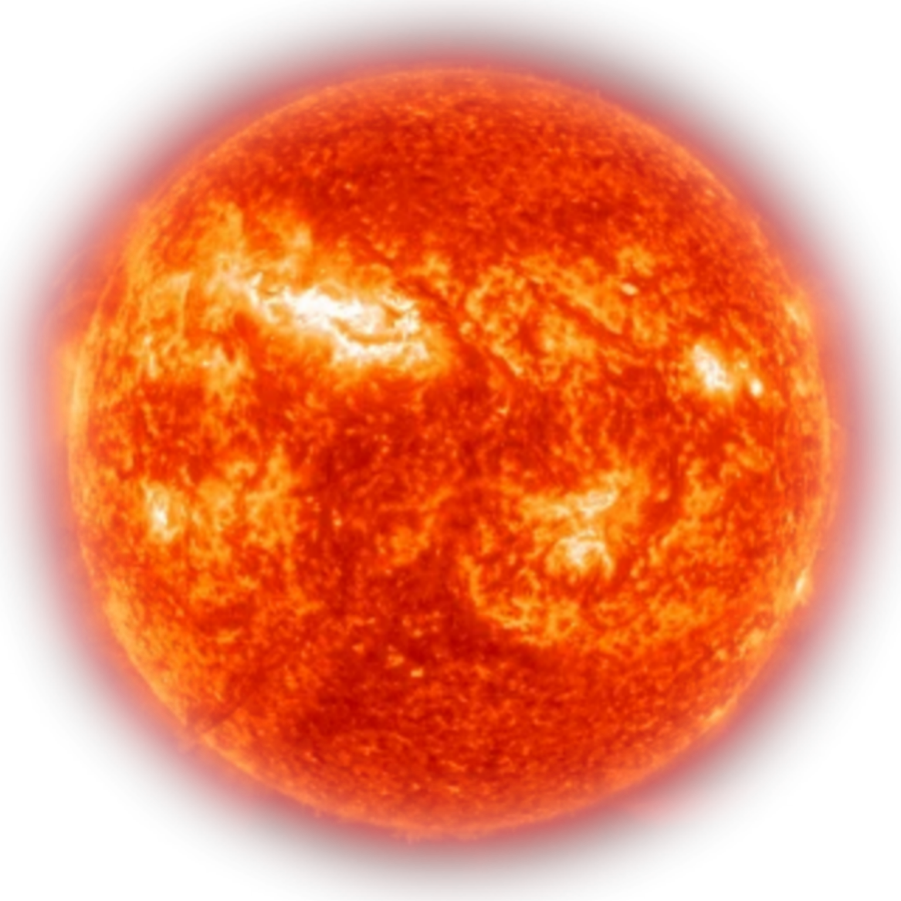
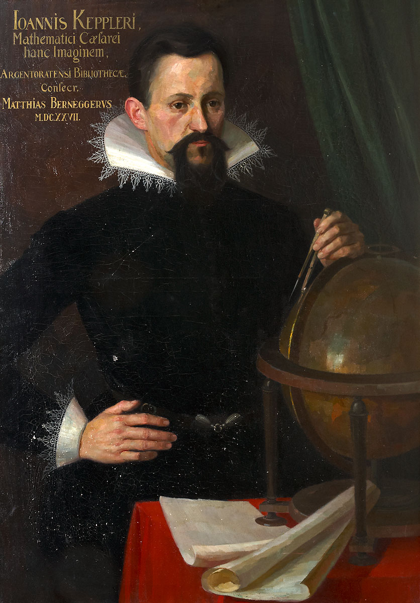

Солнечная система
Приветствую тебя странник, думаю ты сейчас ты в поисках информации по интересующей тебя теме, а именно солнечной системе. Что ж, здесь ты сможешь найти практически всю нужную для тебя информацию, начиная с самой солнечной системы, заканчивая планетами и астероидами. Надеюсь ты найдёшь, что ищешь, удачи!
Начнём с того, что таких «солнечных» систем очень много во всём космосе, но именно у нас, на нашей планете смогла зародиться жизнь, и всё благодаря нашей звезде, Солнцу. Наша планета располагается на оптимальном расстоянии от звезды, поэтому мы получаем достаточно тепла и не слишком много холода. Нам очень повезло, ведь учёные до сих пор не могут найти жизни на других планетах, обладая при этом достаточными технологиями, чтобы разглядывать самые дальние от нас планеты. Это лишь укрепляет факт того, как нам повезло, ведь даже если бы наша планета находилась немного ближе к Солнцу, то температура была бы выше оптимальной и о зарождении жизни не могло бы быть и речи.
Что же такое солнечная система?
Солнечная система — это система, состоящая из планет и включающая в себя центральную звезду Солнце и все естественные космические объекты на гелиоцентричесих орбитах¹. Сформировалась путём гравитационного сжатия газопылевого облака примерно 4,57 млрд лет назад.
В состав солнечной системы входит восемь основных планет и пять карликовых, вращающихся примерно в одной плоскости. По своим физическим свойствам планеты делятся на земную группу и планеты-гиганты. Все эти планеты располагаются в галактике Млечный путь.
Общая масса Солнечной системы составляет около 1,0014 M☉. Бо́льшая часть её приходится на Солнце; оставшаяся часть практически полностью содержится в восьми отдалённых друг от друга планетах, имеющих близкие к круговым орбиты, лежащие почти в одной плоскости — плоскости эклиптики². Из-за этого наблюдается противоречащее ожидаемому распределение момента импульса между Солнцем и планетами (так называемая «проблема моментов»): всего 2 % общего момента системы приходится на долю Солнца, масса которого в ~740 раз больше общей массы планет, а остальные 98 % — на ~0,001 общей массы Солнечной системы
Солнце
Общая информация
Со́лнце — одна из звёзд нашей Галактики и единственная звезда Солнечной системы. Вокруг Солнца обращаются другие объекты этой системы: планеты и их спутники, карликовые планеты и их спутники, астероиды, метеороиды, кометы и космическая пыль.
Солнце принадлежит к первому типу звёздного населения. Одна из распространённых теорий возникновения Солнечной системы предполагает, что её формирование было вызвано взрывами одной или нескольких сверхновых звёзд. Это предположение основано, в частности, на том, что в веществе Солнечной системы содержится аномально большая доля золота и урана, которые могли бы быть результатом эндотермических реакций, вызванных этим взрывом, или ядерного превращения элементов путём поглощения нейтронов веществом массивной звезды второго поколения.
Излучение Излучение Солнца — основной источник энергии на Земле. Его мощность характеризуется солнечной постоянной — мощностью излучения, проходящего через площадку единичной площади, перпендикулярную солнечным лучам и расположенную на расстоянии одной астрономической единицы от Солнца (то есть на орбите Земли) вне земной атмосферы. Эта постоянная равна приблизительно 1,37 кВт/м².
Проходя сквозь атмосферу Земли, солнечное излучение теряет в энергии примерно 370 Вт/м², и до земной поверхности доходит только 1000 Вт/м² (при ясной погоде и когда Солнце находится в зените). Эта энергия может использоваться в различных естественных и искусственных процессах. Так, растения, используя её посредством фотосинтеза, синтезируют органические соединения с выделением кислорода. Прямое нагревание солнечными лучами или преобразование энергии с помощью фотоэлементов может быть использовано для производства электроэнергии (солнечными электростанциями) или выполнения другой полезной работы. Путём фотосинтеза была в далёком прошлом получена и энергия, запасённая в нефти и других видах ископаемого топлива.
Земля
Основные сведения
Земля является третьей планетой от Солнца и единственной в системе, где имеется жизнь. Небесное тело обладает большим количеством особенностей, и люди уже успели хорошо его изучить. Оно относится к планетам земной группы, наряду с Марсом, Венерой и Меркурием. Объект движется вокруг Солнца по определенной орбите и обладает уникальным климатом, благодаря которому существование жизни стало возможным.
Возникновение и эволюция жизни
Существует ряд теорий возникновения жизни на Земле. Около 3,5—3,9 млрд лет назад появился «последний универсальный общий предок», от которого впоследствии произошли все другие живые организмы.
Развитие фотосинтеза позволило живым организмам использовать солнечную энергию напрямую. Это привело к наполнению кислородом атмосферы, начавшемуся примерно 2,5 млрд лет назад, а в верхних слоях — к формированию озонового слоя. Симбиоз мелких клеток с более крупными привёл к развитию сложных клеток — эукариот. Примерно 2,1 млрд лет назад появились многоклеточные организмы, которые продолжали приспосабливаться к окружающим условиям. Благодаря поглощению губительного ультрафиолетового излучения озоновым слоем жизнь смогла начать освоение поверхности Земли.
В 1960 году была выдвинута гипотеза Земли-снежка, утверждающая, что в период между 750 и 580 млн лет назад Земля была полностью покрыта льдом. Эта гипотеза объясняет кембрийский взрыв — резкое повышение разнообразия многоклеточных форм жизни около 542 млн лет назад. В настоящее время эта гипотеза получила подтверждение
Это первый случай, когда показано, что в ледниковую эпоху Sturtian лёд доходил до тропических широт, прямое доказательство того, что в данное оледенение существовала «Земля-снежок», — говорит ведущий автор работы Френсис Макдоналд (Francis A. Macdonald) из Гарварда (Harvard University). — Наши данные также показывают, что это оледенение продолжалось как минимум 5 миллионов лет.
Возраст изученных ледниковых отложений близок к возрасту большой магматической провинции, протянувшейся на 930 миль [1500 км] на северо-востоке Канады, что косвенно подтверждает большую роль вулканизма в освобождении планеты из ледяного плена.
Около Около 1200 млн лет назад появились первые водоросли, а примерно 450 млн лет назад — первые высшие растения. Беспозвоночные животные появились в эдиакарском периоде, а позвоночные — во время кембрийского взрыва около 525 миллионов лет назад.
После кембрийского взрыва было пять массовых вымираний. Вымирание в конце пермского периода, которое является самым массовым в истории жизни на Земле, привело к гибели более 90 % живых существ на планете. После пермской катастрофы самыми распространёнными наземными позвоночными стали архозавры, от которых в конце триасового периода произошли динозавры. Они доминировали на планете в течение юрского и мелового периодов. 66 млн лет назад произошло мел-палеогеновое вымирание, вызванное, вероятно, падением метеорита; оно привело к исчезновению нептичьих динозавров и других крупных рептилий, но обошло многих мелких животных, таких как млекопитающие, которые тогда представляли собой небольших насекомоядных животных, а также птиц, являющихся эволюционной ветвью динозавров. В течение последних 65 миллионов лет развилось огромное количество разнообразных видов млекопитающих, и несколько миллионов лет назад обезьяноподобные животные получили способность прямохождения. Это позволило использовать орудия и способствовало общению, которое помогало добывать пищу и стимулировало необходимость в большом мозге. Развитие земледелия, а затем цивилизации, в короткие сроки позволило людям воздействовать на Землю как никакая другая форма жизни, влиять на природу и численность других видов.
Последний ледниковый период начался примерно 40 млн лет назад, его пик приходится на плейстоцен около 3 миллионов лет назад. На фоне продолжительных и значительных изменений средней температуры земной поверхности, что может быть связано с периодом обращения Солнечной системы вокруг центра Галактики (около 200 млн лет), имеют место и меньшие по амплитуде и длительности циклы похолодания и потепления (см. циклы Миланковича), происходящие каждые 40—100 тысяч лет, имеющие явно автоколебательный характер, возможно, вызванный действием обратных связей от реакции всей биосферы как целого, стремящейся обеспечить стабилизацию климата Земли (см. гипотезу Геи, выдвинутую Джеймсом Лавлоком).
Последний цикл оледенения в Северном полушарии закончился около 10 тысяч лет назад.
Строение Земли
Земля относится к планетам земной группы, и в отличие от газовых гигантов, таких как Юпитер, имеет твёрдую поверхность. Это крупнейшая из четырёх планет земной группы в Солнечной системе, как по размеру, так и по массе. Кроме того, Земля среди этих четырёх планет имеет наибольшие плотность, поверхностную гравитацию и магнитное поле. Это единственная известная планета с активной тектоникой плит.
Недра Земли делятся на слои по химическим и физическим (реологическим) свойствам, но в отличие от других планет земной группы, Земля имеет ярко выраженное внешнее и внутреннее ядро. Наружный слой Земли представляет собой твёрдую оболочку, состоящую главным образом из силикатов. От мантии она отделена границей с резким увеличением скоростей продольных сейсмических волн — поверхностью Мохоровичича.
Твёрдая кора и вязкая верхняя часть мантии составляют литосферу. Под литосферой находится астеносфера, слой относительно низкой вязкости, твёрдости и прочности в верхней мантии.
Значительные изменения кристаллической структуры мантии происходят на глубине 410—660 км ниже поверхности, охватывающей (переходную зону), которая отделяет верхнюю и нижнюю мантию. Под мантией находится жидкий слой, состоящий из расплавленного железа с примесями никеля, серы и кремния — ядро Земли. Сейсмические измерения показывают, что оно состоит из двух частей: твёрдого внутреннего ядра (радиус ~ 1220 км) и жидкого внешнего ядра (радиус ~ 2250 км)
Литосфера
В строении литосферы выделяют подвижные области (складчатые пояса) и относительно стабильные платформы. Блоки литосферы — литосферные плиты — двигаются по относительно пластичной астеносфере. Изучению и описанию этих движений посвящён раздел геологии о тектонике плит.
Под литосферой располагается астеносфера, составляющая внешнюю часть мантии. Астеносфера ведёт себя как перегретая и чрезвычайно вязкая жидкость, где происходит понижение скорости сейсмических волн, свидетельствуя об изменении пластичности пород.
Для обозначения внешней оболочки литосферы применялся ныне устаревший термин сиаль, происходящий от названия основных элементов горных пород.
Атмосфера
Атмосфера (от. др.-греч. ἀτμός «пар» и σφαῖρα «шар») — газовая оболочка, окружающая планету Земля; состоит из азота и кислорода, со следовыми количествами водяного пара, диоксида углерода и других газов. С момента своего образования она значительно изменилась под влиянием биосферы. Появление оксигенного фотосинтеза 2,4—2,5 млрд лет назад способствовало развитию аэробных организмов, а также насыщению атмосферы кислородом и формированию озонового слоя, который оберегает всё живое от вредных ультрафиолетовых лучей. Атмосфера определяет погоду на поверхности Земли, защищает планету от космических лучей, и частично — от метеоритных бомбардировок. Она также регулирует основные климатообразующие процессы: круговорот воды в природе, циркуляцию воздушных масс, переносы тепла. Молекулы атмосферных газов могут захватывать тепловую энергию, мешая ей уйти в открытый космос, тем самым повышая температуру планеты. Это явление известно как парниковый эффект. Основными парниковыми газами считаются водяной пар, двуокись углерода, метан и озон. Без этого эффекта теплоизоляции средняя поверхностная температура Земли составила бы от −18 до −23 °C (при том, что в действительности она равна 14,8 °С), и жизнь, скорее всего, не существовала бы.
Через атмосферу к земной поверхности поступает электромагнитное излучение Солнца — главный источник энергии химических, физических и биологических процессов в географической оболочке Земли.
Атмосфера Земли разделяется на слои, которые различаются между собой температурой, плотностью, химическим составом и т. д. Общая масса газов, составляющих земную атмосферу — примерно 5,15⋅1018 кг. На уровне моря атмосфера оказывает на поверхность Земли давление, равное 1 атм (101,325 кПа). Средняя плотность воздуха у поверхности — 1,22 г/л, причём она быстро уменьшается с ростом высоты: так, на высоте 10 км над уровнем моря она составляет 0,41 г/л, а на высоте 100 км — 10−7 г/л.
В нижней части атмосферы содержится около 80 % общей её массы и 99 % всего водяного пара (1,3-1,5⋅1013 т), этот слой называется тропосферой. Его толщина неодинакова и зависит от типа климата и сезонных факторов: так, в полярных регионах она составляет около 8—10 км, в умеренном поясе до 10—12 км, а в тропических или экваториальных доходит до 16—18 км. В этом слое атмосферы температура опускается в среднем на 6 °С на каждый километр при движении в высоту. Выше располагается переходный слой — тропопауза, отделяющий тропосферу от стратосферы. Температура здесь находится в пределах 190—220 K (−73—83 °C).
Стратосфера Стратосфера — слой атмосферы, который расположен на высоте от 10—12 до 55 км (в зависимости от погодных условий и времени года). На него приходится не более 20 % всей массы атмосферы. Для этого слоя характерно понижение температуры до высоты ~25 км, с последующим повышением на границе с мезосферой почти до 0 °С. Эта граница называется стратопаузой и находится на высоте 47—52 км. В стратосфере отмечается наибольшая концентрация озона в атмосфере, который оберегает все живые организмы на Земле от вредного ультрафиолетового излучения Солнца. Интенсивное поглощение солнечного излучения озоновым слоем и вызывает быстрый рост температуры в этой части атмосферы.
Мезосфера расположена на высоте от 50 до 80 км над поверхностью Земли, между стратосферой и термосферой. Она отделена от этих слоёв мезопаузой (80—90 км). Это самое холодное место на Земле, температура здесь опускается до −100 °C. При такой температуре вода, содержащаяся в воздухе, быстро замерзает, иногда формируя серебристые облака. Их можно наблюдать сразу после захода Солнца, но наилучшая видимость создаётся, когда оно находится от 4 до 16° ниже горизонта.В мезосфере сгорает бо́льшая часть метеоритов, проникающих в земную атмосферу. С поверхности Земли они наблюдаются как падающие звёзды.
На высоте 100 км над уровнем моря находится условная граница между земной атмосферой и космосом — линия Кармана.
В термосфере температура быстро поднимается до 1000 К (727 °C), это связано с поглощением в ней коротковолнового солнечного излучения. Это самый протяжённый слой атмосферы (80—1000 км). На высоте около 800 км рост температуры прекращается, поскольку воздух здесь очень разрежён и слабо поглощает солнечную радиация.
Ионосфера включает в себя два последних слоя. Здесь происходит ионизация молекул под действием солнечного ветра и возникают полярные сияния.
Экзосфера — внешняя и очень разреженная часть земной атмосферы. В этом слое частицы способны преодолевать вторую космическую скорость Земли и улетучиваться в космическое пространство. Это вызывает медленный, но устойчивый процесс, называемый диссипацией (рассеянием) атмосферы. В космос ускользают в основном частицы лёгких газов: водорода и гелия. Молекулы водорода, имеющие самую низкую молекулярную массу, могут легче достигать второй космической скорости и утекать в космическое пространство более быстрыми темпами, чем другие газы. Считается, что потеря восстановителей, например водорода, была необходимым условием для возможности устойчивого накопления кислорода в атмосфере. Следовательно, свойство водорода покидать атмосферу Земли, возможно, повлияло на развитие жизни на планете. В настоящее время бо́льшая часть водорода, попадающая в атмосферу, преобразуется в воду, не покидая Землю, а потеря водорода происходит в основном от разрушения метана в верхних слоях атмосферы.
Магнитное поле
Магнитное поле Земли в первом приближении представляет собой диполь, полюсы которого расположены рядом с географическими полюсами планеты. Поле формирует магнитосферу, которая отклоняет частицы солнечного ветра. Они накапливаются в радиационных поясах — двух концентрических областях в форме тора вокруг Земли. Около магнитных полюсов эти частицы могут «высыпаться» в атмосферу и приводить к появлению полярных сияний. На экваторе магнитное поле Земли имеет индукцию 3,05⋅10-5 Тл и магнитный момент 7,91⋅1015 Тл·м³.
Согласно теории «магнитного динамо», поле генерируется в центральной области Земли, где тепло создаёт протекание электрического тока в жидком металлическом ядре. Это, в свою очередь, приводит к возникновению у Земли магнитного поля. Конвекционные движения в ядре являются хаотичными; магнитные полюсы дрейфуют и периодически меняют свою полярность. Это вызывает инверсии магнитного поля Земли, которые возникают в среднем несколько раз за каждые несколько миллионов лет. Последняя инверсия произошла приблизительно 700 000 лет назад.
Магнитосфера — область пространства вокруг Земли, которая образуется, когда поток заряженных частиц солнечного ветра отклоняется от своей первоначальной траектории под воздействием магнитного поля. На стороне, обращённой к Солнцу, толщина её головной ударной волны составляет около 17 км и расположена она на расстоянии около 90 000 км от Земли. На ночной стороне планеты магнитосфера вытягивается, приобретая длинную цилиндрическую форму.
Когда заряженные частицы высокой энергии сталкиваются с магнитосферой Земли, то появляются радиационные пояса (пояса Ван Аллена). Полярные сияния возникают, когда солнечная плазма достигает атмосферы Земли в районе магнитных полюсов.
Марс
Основные сведения
Марс — четвёртая по удалённости от Солнца и седьмая по размеру планета Солнечной системы; масса планеты составляет 10,7 % массы Земли. Названа в честь Марса — древнеримского бога войны, соответствующего древнегреческому Аресу. Также Марс называют «красной планетой» из-за красноватого оттенка поверхности, придаваемого ей минералом маггемитом
Рельеф Марса обладает многими уникальными чертами. Марсианский потухший вулкан гора Олимп — самая высокая известная гора на планетах Солнечной системы(самая высокая известная гора в Солнечной системе — на астероиде Веста), а долины Маринер — самый крупный известный каньон на планетах (самый большой каньон в Солнечной системе обнаружен на спутнике Плутона — Хароне). Помимо этого, южное и северное полушария планеты радикально отличаются по рельефу; существует гипотеза, что Великая Северная равнина, занимающая 40 % поверхности планеты, является импактным кратером; в этом случае она оказывается самым крупным известным ударным кратером в Солнечной системе.
Марс имеет период вращения и смену времён года, аналогичные земным, но его климат значительно холоднее и суше земного.
Вплоть до полёта к Марсу автоматической межпланетной станции «Маринер-4» в 1965 году многие исследователи полагали, что на его поверхности есть вода в жидком состоянии. Это мнение было основано на наблюдениях за периодическими изменениями в светлых и тёмных участках, особенно в полярных широтах, которые были похожи на континенты и моря. Тёмные длинные линии на поверхности Марса интерпретировались некоторыми наблюдателями как ирригационные каналы для жидкой воды. Позднее было доказано, что большинство этих тёмных линий являются всего лишь оптической иллюзией.
На На самом деле из-за низкого давления вода (без примесей, понижающих точку замерзания) не может существовать в жидком состоянии на большей части (около 70 %) поверхности Марса. Вода в состоянии льда была обнаружена в марсианском грунте космическим аппаратом НАСА «Феникс». В то же время собранные марсоходами «Спирит» и «Opportunity» геологические данные позволяют предположить, что в далёком прошлом вода покрывала значительную часть поверхности Марса. Наблюдения в течение последнего десятилетия позволили обнаружить в некоторых местах на поверхности Марса слабую гейзерную активность. По наблюдениям с космического аппарата «Mars Global Surveyor», некоторые части южной полярной шапки Марса постепенно отступают.
На 2021 год орбитальная исследовательская группировка на орбите Марса насчитывает восемь функционирующих космических аппаратов: «Марс Одиссей», «Марс-экспресс», «Mars Reconnaissance Orbiter», MAVEN, «Mars Orbiter Mission», «ExoMars Trace Gas Orbiter», «Аль-Амаль» и орбитальный аппарат китайской миссии «Тяньвэнь-1». Это больше, чем около любой другой планеты, не считая Землю. Поверхность же Марса исследует три марсохода — «Кьюриосити», «Персеверанс» и «Чжужун». Кроме того, на поверхности функционирует посадочный модуль миссии «InSight», а также находятся несколько неактивных посадочных модулей и марсоходов, завершивших исследования.
Марс хорошо виден с Земли невооружённым глазом. Его видимая звёздная величина достигает −2,91m (при максимальном сближении с Землёй). Марс уступает по яркости лишь Юпитеру (во время великого противостояния Марса он может превзойти Юпитер), Венере, Луне и Солнцу. Противостояние Марса можно наблюдать каждые два года. Последний раз Марс был в противостоянии 8 декабря 2022 года. Последнее же великое противостояние Марса произошло 27 июля 2018 года. Тогда он находился на расстоянии 0,386 а. е. от Земли. Как правило, во время великого противостояния (то есть при совпадении противостояния с Землёй и прохождения Марсом перигелия своей орбиты) оранжевый Марс является ярчайшим объектом земного ночного неба после Луны (не считая Венеру, которая и тогда ярче него, но видна утром и вечером), но это происходит лишь один раз в 15—17 лет в течение одной-двух недель.
Физические свойства
По линейному размеру Марс практически ровно вдвое меньше Земли. Его средний экваториальный радиус оценивается как 3396,9 ± 0,4 км или 3396,2 ± 0,1 км (53,2 % земного). Средний полярный радиус Марса оценивается в 3374,9 км или 3376,2 ± 0,1 км; полярный радиус у северного полюса — 3376,2 км, у южного — 3382,6 км.
Площадь поверхности Марса равна 144 млн км² (28,3 % площади поверхности Земли) и приблизительно равна площади суши на Земле. Масса планеты — 6,417⋅1023]—6,418⋅1023кг, более точные значения: 6,4171⋅1023 кг или 6,4169 ± 0,0006 ⋅1023 кг. Масса Марса составляет около 10,7 % массы Земли. Средняя плотность Марса — 3930—3933кг/м³, более точное значение: 3933,5 ± 0,4 кг/м³ или 3934,0 ± 0,8 кг/м³ (0,713 земной плотности).
Ускорение свободного падения на экваторе равно 3,711 м/с²(0,378 земного), что практически столько же, как у планеты Меркурий, который почти вдвое меньше Марса, но обладает массивным ядром и большей плотностью; первая космическая скорость составляет 3,6 км/с, вторая — 5,027 км/с.
Сила тяжести у поверхности Марса составляет 39,4 % от земной (в 2,5 раза слабее). Поскольку неизвестно, является ли такая сила тяжести достаточной, чтобы избежать длительных проблем со здоровьем, для долговременного пребывания человека на Марсе рассматриваются варианты создания искусственной силы тяжести с помощью утяжеляющих костюмов или центрифуг, обеспечивающих схожую с земной нагрузку на скелет.
Время на Марсе
Период вращения планеты близок к земному — 24 часа 37 минут 22,7 секунды (относительно звёзд), длина средних марсианских солнечных суток составляет 24 часа 39 минут 35,24409 секунды, что всего на 2,7 % длиннее земных суток. Для удобства марсианские сутки именуют «солами». Марсианский год равен 668,59 сола, что составляет 686,98 земных суток
Марс вращается вокруг своей оси, наклонённой относительно перпендикуляра к плоскости орбиты под углом 25,19°. Наклон оси вращения Марса схож с земным и обеспечивает смену времён года. При этом эксцентриситет орбиты приводит к большим различиям в их продолжительности — так, северная весна и лето, вместе взятые, длятся 371 сол, то есть заметно больше половины марсианского года. В то же время они приходятся на участок орбиты Марса, удалённый от Солнца. Поэтому на Марсе северное лето долгое и прохладное, а южное — короткое и относительно тёплое
Геология и внутреннее строение
В прошлом на Марсе, как и на Земле, происходило движение литосферных плит. Это подтверждается особенностями магнитного поля Марса, местами расположения некоторых вулканов, например, в провинции Фарсида, а также формой долины Маринер. Современное положение дел, когда вулканы могут существовать гораздо более длительное время, чем на Земле, и достигать гигантских размеров, говорит о том, что сейчас данное движение скорее отсутствует. В пользу этого говорит тот факт, что щитовые вулканы растут в результате повторных извержений из одного и того же жерла в течение длительного времени. На Земле из-за движения литосферных плит вулканические точки постоянно меняли своё положение, что ограничивало рост щитовых вулканов и, возможно, не позволяло достичь им такой высоты, как на Марсе. С другой стороны, разница в максимальной высоте вулканов может объясняться тем, что из-за меньшей силы тяжести на Марсе возможно построение более высоких структур, которые не обрушились бы под собственным весом. Возможно, на планете имеется слабая тектоническая активность, приводящая к образованию наблюдаемых с орбиты пологих каньонов. По данным сейсмометра SEIS на Марсе имеется небольшая сейсмическая активность, самое сильное зафиксированное марсотрясение (событие S1222a) имело магнитуду 4,7, самое сильное сейсмическое событие, вызванное падением метеорита на поверхность Марса в горной местности Темпе-Терра, имело магнитуду 4,1 ± 0,2 и позволило определить структуру скоростей P-волн в нижней мантии.
Магнитое поле
У Марса было зафиксировано слабое магнитное поле.
Согласно показаниям магнитометров станций «Марс-2» и «Марс-3», напряжённость магнитного поля на экваторе составляет около 60 гамм, на полюсе — 120 гамм, что в 500 раз слабее земного. По данным АМС «Марс-5», напряжённость магнитного поля на экваторе составляла 64 гаммы, а магнитный момент планетарного диполя — 2,4⋅1022 эрстед·см².
Магнитное поле Марса крайне неустойчиво, в различных точках планеты его напряжённость может отличаться от 1,5 до 2 раз, а магнитные полюса не совпадают с физическими. Это говорит о том, что железное ядро Марса находится в сравнительной неподвижности по отношению к его коре, то есть механизм планетарного динамо, ответственный за работу магнитного поля Земли, на Марсе не работает. Хотя на Марсе не имеется устойчивого всепланетного магнитного поля, наблюдения показали, что части планетной коры намагничены и что наблюдалась смена магнитных полюсов этих частей в прошлом. Намагниченность данных частей оказалась похожей на полосовые магнитные аномалии в мировом океане.
По одной теории, опубликованной в 1999 году и перепроверенной в 2005 году (с помощью беспилотной станции «Марс Глобал Сервейор»), эти полосы демонстрируют тектонику плит 4 миллиарда лет назад — до того, как гидромагнитное динамо планеты прекратило выполнять свою функцию, что послужило причиной резкого ослабления магнитного поля. Причины такого резкого ослабления неясны. Существует предположение, что функционирование динамо 4 млрд лет назад объясняется наличием астероида, который вращался на расстоянии 50—75 тысяч километров вокруг Марса и вызывал нестабильность в его ядре. Затем астероид снизился до предела Роша и разрушился. Тем не менее, это объяснение само содержит неясные моменты и оспаривается в научном сообществе.
Меркурий
Общая информация
Мерку́рий — наименьшая планета Солнечной системы и самая близкая к Солнцу. Названа в честь древнеримского бога торговли — быстрого Меркурия, поскольку она движется по небу быстрее других планет. Её период обращения вокруг Солнца составляет всего 87,97 земных суток — самый короткий среди всех планет Солнечной системы.
Меркурий относится к планетам земной группы. По своим физическим характеристикам Меркурий напоминает Луну. У него нет естественных спутников, но есть очень разрежённая атмосфера. Планета обладает крупным железным ядром, являющимся источником магнитного поля, напряжённость которого составляет 0,01 от земного магнитного поля. Ядро Меркурия составляет 83 % от всего объёма планеты. Температура на поверхности Меркурия колеблется от 80 до 700 К (от −190 до +430 °C). Солнечная сторона нагревается гораздо больше, чем полярные области и обратная сторона планеты.
Радиус Меркурия составляет всего 2439,7 ± 1,0 км, что меньше радиуса спутника Юпитера Ганимеда и спутника Сатурна Титана (двух самых больших спутников планет в Солнечной системе). Но несмотря на меньший радиус, Меркурий превосходит Ганимед и Титан вместе взятые по массе. Масса планеты равна 3,3⋅1023 кг. Средняя плотность Меркурия довольно велика — 5,43 г/см3, что лишь незначительно меньше плотности Земли. Учитывая, что Земля намного больше по размерам, значение плотности Меркурия указывает на повышенное содержание в его недрах металлов. Ускорение свободного падения на Меркурии равно 3,70 м/с2. Вторая космическая скорость — 4,25 км/с. О планете пока известно сравнительно немного. Только в 2009 году учёные составили первую полную карту Меркурия, используя снимки аппаратов «Маринер-10» и «Мессенджер».
После лишения Плутона в 2006 году статуса планеты к Меркурию перешло звание самой маленькой планеты Солнечной системы.
Астрономия
Наиболее благоприятные условия для наблюдения Меркурия — в низких широтах и вблизи экватора: это связано с тем, что продолжительность сумерек там наименьшая. В средних широтах найти Меркурий гораздо труднее и возможно только в период наилучших элонгаций. В высоких широтах планету практически никогда (за исключением затмений) нельзя увидеть на тёмном ночном небе: Меркурий виден в течение очень небольшого промежутка времени после наступления сумерек.
Наиболее благоприятные условия для наблюдения Меркурия в средних широтах обоих полушарий складываются около равноденствий (продолжительность сумерек при этом минимальная). Оптимальным временем для наблюдений планеты являются утренние или вечерние сумерки в периоды его элонгаций (периодов максимального удаления Меркурия от Солнца на небе, наступающих несколько раз в год).
Астрономический символ Меркурия (☿) представляет собой стилизованное изображение символа римского бога Меркурия (или греческого Гермеса) — кадуцея с двумя переплетёнными змеями на его вершине[27]. Этот символ использовался уже в греческих папирусах 3-4 века н.э.; в средневековье, как и к некоторым другим символам, был добавлен крест.
Небесная механика
Меркурий движется вокруг Солнца по довольно сильно вытянутой эллиптической орбите (эксцентриситет 0,205) на среднем расстоянии 57,91 млн км (0,387 а.е.). В перигелии Меркурий находится в 45,9 млн км от Солнца (0,3 а.е.), в афелии — в 69,7 млн км (0,46 а.е.), таким образом, в перигелии Меркурий более чем в полтора раза ближе к Солнцу, чем в афелии. Наклон орбиты к плоскости эклиптики равен 7°. Средняя скорость движения планеты по орбите — 48 км/с (в афелии — 38,7 км/с, а в перигелии — 56,6 км/с). Расстояние от Меркурия до Земли меняется от 82 до 217 млн км. Поэтому при наблюдении с Земли Меркурий за несколько дней изменяет своё положение относительно Солнца от запада (утренняя видимость) к востоку (вечерняя видимость).
Меркурий обращается по своей орбите вокруг Солнца с периодом 87,97 земных суток. Продолжительность одних звёздных суток на Меркурии составляет 58,65 земных, то есть 2/3 меркурианского года, а солнечных — 176 земных, то есть два меркурианских года: продолжительность меркурианского дня (и соответственно ночи) равна продолжительности меркурианского года. Такое соотношение периодов вращения вокруг оси и обращения Меркурия вокруг Солнца является уникальным для Солнечной системы явлением. Оно, предположительно, объясняется тем, что приливное воздействие Солнца отбирало момент количества движения и тормозило вращение, которое было первоначально более быстрым, до тех пор, пока оба периода не оказались связаны целочисленным отношением. В результате за один меркурианский год Меркурий успевает повернуться вокруг своей оси на пол-оборота относительно Солнца (полтора относительно звёзд). То есть если в момент прохождения Меркурием перигелия определённая точка его поверхности обращена точно к Солнцу, то при следующем прохождении перигелия к Солнцу будет обращена в точности противоположная точка поверхности, а ещё через один меркурианский год Солнце снова вернётся в зенит над первой точкой.
В результате такого движения планеты на ней можно выделить «горячие долготы» — два противоположных меридиана, которые попеременно обращены к Солнцу во время прохождения Меркурием перигелия, и на которых из-за этого бывает особенно горячо даже по меркурианским меркам.
Поскольку на Меркурии нет смены времён года, рядом с полюсами есть области, которые солнечные лучи не освещают. Исследования, проведённые с помощью радиотелескопа в Аресибо, позволяют предположить, что в этой холодной и тёмной зоне существуют ледники. Слой водяного льда может достигать 2 м; он, вероятно, покрыт слоем пыли.
Комбинация осевого и орбитального движений Меркурия благодаря вытянутой орбите порождает ещё одно интересное явление. Скорость вращения планеты вокруг оси — величина практически постоянная, в то время как скорость орбитального движения постоянно изменяется. На участке орбиты вблизи перигелия в течение примерно 8 суток угловая скорость орбитального движения превышает угловую скорость вращательного движения. В результате Солнце на небе Меркурия описывает петлю, как сам Меркурий на небе Земли. На долготах близких к 90° и 270° Солнце после восхода останавливается, поворачивает обратно и заходит почти в той же точке, где взошло. Но спустя несколько земных суток Солнце восходит снова в той же точке и уже надолго. Этот эффект иногда называют эффектом Иисуса Навина, по имени Иисуса Навина, который, согласно Библии, однажды остановил движение Солнца. Около захода картина повторяется в обратном порядке.
Интересно также, что, хотя ближайшими по расположению орбит к Земле являются Марс и Венера, Меркурий в среднем чаще других является ближайшей к Земле планетой (поскольку другие планеты отдаляются в большей степени, не будучи столь «привязанными» к Солнцу).
Прохождение по диску солнца
Прохождение Меркурия по диску Солнца — довольно редкое астрономическое явление, однако, оно случается намного чаще, чем, например, прохождения Венеры, поскольку Меркурий находится ближе к Солнцу и меркурианский год короче. Прохождение Меркурия может произойти в мае или в ноябре. В XXI веке произойдёт 14 прохождений Меркурия по Солнцу, ближайшее будет 13 ноября 2032 года.
Возможно также одновременное прохождение по диску Солнца и Венеры одновременно с Меркурием, но такое событие бывает исключительно редко. Ближайший совместный транзит Венеры и Меркурия будет 26 июля 69 163 года.
Прохождение Меркурия может произойти и в момент солнечного затмения. Подобное крайне редкое совпадение случится 30 мая 6757 года.
Аномальная процессия орбиты
Меркурий находится близко к Солнцу, поэтому эффекты общей теории относительности проявляются в его движении в наибольшей мере среди всех планет Солнечной системы. Уже в 1859 году французский математик и астроном Урбен Леверье сообщил, что существует медленная прецессия перигелия Меркурия, которая не может быть полностью объяснена на основе расчёта влияния известных планет согласно ньютоновской механике.
Прецессия перигелия Меркурия составляет 574,10 ± 0,65″ (угловых секунд) за столетие в гелиоцентрической системе координат, или 5600 угловых секунд (≈1,7°) за столетие в геоцентрической системе координат. Расчёт влияния всех других небесных тел на Меркурий согласно ньютоновской механике даёт прецессию соответственно 531,63 ± 0,69 и 5557 угловых секунд за столетие. Пытаясь объяснить наблюдаемый эффект, Леверье предположил, что существует ещё одна планета (или, возможно, пояс небольших астероидов), орбита которой расположена ближе к Солнцу, чем у Меркурия, и которая вносит возмущающее влияние (другие объяснения рассматривали неучтённое полярное сжатие Солнца). Благодаря ранее достигнутым успехам в поисках Нептуна с учётом его влияния на орбиту Урана данная гипотеза стала популярной, и искомая гипотетическая планета даже получила название — Вулкан. Однако эта планета так и не была обнаружена.
Так как ни одно из этих объяснений не выдержало проверки наблюдениями, некоторые физики начали выдвигать более радикальные гипотезы, что необходимо изменять сам закон тяготения, например, менять в нём показатель степени или добавлять в потенциал члены, зависящие от скорости тел. Однако большинство таких попыток оказались противоречивыми. В начале XX века общая теория относительности дала объяснение наблюдаемой прецессии. Эффект очень мал: релятивистская «добавка» составляет всего 42,98 угловой секунды за век, что составляет 7,5 % (1/13) от общей скорости прецессии, так что потребуется по меньшей мере 12 млн оборотов Меркурия вокруг Солнца, чтобы перигелий вернулся в положение, предсказанное классической теорией. Подобное, но меньшее смещение существует и для других планет — 8,62 угловой секунды за век для Венеры, 3,84 для Земли, 1,35 для Марса, а также астероидов — 10,05 для Икара.
Магнитое поле
Меркурий обладает магнитным полем, напряжённость которого, по результатам измерения «Маринера-10», примерно в 100 раз меньше земного и составляет ~300 нТл. Магнитное поле Меркурия имеет дипольную структуру и в высшей степени симметрично, а его ось всего на 10 градусов отклоняется от оси вращения планеты, что налагает существенное ограничение на круг теорий, объясняющих его происхождение. Магнитное поле Меркурия, возможно, образуется в результате эффекта динамо, то есть так же, как и на Земле. Этот эффект является результатом циркуляции вещества в жидком ядре планеты. Из-за выраженного эксцентриситета орбиты планеты и близости к Солнцу возникает чрезвычайно сильный приливный эффект. Он поддерживает ядро в жидком состоянии, что необходимо для проявления «эффекта динамо». В 2015 году учёные из США, Канады и РФ оценили нижнюю границу среднего возраста магнитного поля Меркурия в 3,7—3,9 миллиарда лет.
Магнитное поле Меркурия достаточно сильное, чтобы влиять на движение солнечного ветра вокруг планеты, создавая магнитосферу. Магнитосфера планеты, хотя и настолько мала, что может поместиться внутри Земли, достаточно мощная, чтобы захватить заряженные частицы (плазму) солнечного ветра. Результаты наблюдений, полученные «Маринером-10», указывают на существование низкоэнергетической плазмы в магнитосфере с ночной стороны планеты. В «подветренном» хвосте магнитосферы были обнаружены всплески высокоэнергетических частиц, что указывает на динамические качества магнитосферы планеты.
Во время второго пролёта мимо планеты 6 октября 2008 года «Мессенджер» обнаружил, что магнитное поле Меркурия может иметь значительное количество «окон» — зон со сниженной напряжённостью магнитного поля. Приборы космического аппарата обнаружили явление магнитных вихрей — сплетённых узлов магнитного поля, соединяющих аппарат с магнитным полем планеты. Вихрь достигал 800 км в поперечнике, что составляет треть радиуса планеты. Такая вихревая форма магнитного поля порождается солнечным ветром. Так как солнечный ветер обтекает магнитное поле планеты, силовые линии магнитного поля связываются с плазмой солнечного ветра и увлекаются им, завиваясь в вихреподобные структуры. Эти вихри магнитного поля формируют «окна» в планетарном магнитном щите, через которые заряженные частицы солнечного ветра проникают сквозь него и достигают поверхности Меркурия. Процесс связи планетного и межпланетного магнитных полей, названный магнитным пересоединением, — обычное явление в космосе. Оно наблюдается и в магнитосфере Земли, при этом возникают магнитные вихри. Однако, по наблюдениям «Мессенджера», частота присоединения магнитного поля к плазме солнечного ветра в магнитосфере Меркурия в 10 раз выше
Венера
Вене́ра — вторая по удалённости от Солнца и шестая по размеру планета Солнечной системы, наряду с Меркурием, Землёй и Марсом принадлежащая к семейству планет земной группы. Названа в честь древнеримской богини любви Венеры. По ряду характеристик — например, по массе и размерам — Венера считается «сестрой» Земли. Венерианский год составляет 224,7 земных суток. Она имеет самый длинный период вращения вокруг своей оси (около 243 земных суток, в среднем 243,0212 ± 0,00006 сут) среди всех планет Солнечной системы и вращается в направлении, противоположном направлению вращения большинства планет.
Общие сведения
Среднее расстояние Венеры от Солнца — 108 млн км (0,723 а. е.). Расстояние от Венеры до Земли меняется в пределах от 38 до 261 млн км. Её орбита очень близка к круговой — эксцентриситет составляет всего 0,0067. Период обращения вокруг Солнца равен 224,7 земных суток; средняя орбитальная скорость — 35 км/с. Наклон орбиты к плоскости эклиптики равен 3,4°. По размерам Венера довольно близка к Земле. Радиус планеты равен 6051,8 км (95 % земного), масса — 4,87⋅1024 кг (81,5 % земной), средняя плотность — 5,24 г/см³. Ускорение свободного падения равно 8,87 м/с², вторая космическая скорость — 10,36 км/с.
Венера классифицируется как землеподобная планета, и иногда её называют «сестрой Земли», потому что обе планеты похожи размерами и составом. Однако условия на двух планетах очень разнятся. Атмосфера Венеры, самая плотная среди землеподобных планет, состоит главным образом из углекислого газа. Поверхность планеты полностью скрывают облака серной кислоты, непрозрачные в видимом свете. Споры о том, что находится под густой облачностью Венеры, продолжались до XX века. В то же время атмосфера Венеры прозрачна для дециметровых радиоволн, с помощью которых впоследствии и был исследован рельеф планеты.
Атмосферное давление на поверхности Венеры в 92 раза больше, чем на Земле. Подробное картографирование поверхности Венеры проводилось в течение последних 22 лет — в частности, проектом «Магеллан». Поверхность Венеры носит яркие признаки вулканической деятельности, а атмосфера содержит серу. Есть некоторые признаки того, что вулканическая деятельность на Венере продолжается и сейчас. Удивительно низкое число ударных кратеров говорит в пользу того, что поверхность Венеры относительно молода: ей приблизительно 500 миллионов лет. Тектоники плит на Венере нет (вероятно, потому, что её литосфера из-за отсутствия воды слишком вязкая и, следовательно, недостаточно подвижна), но есть много следов менее масштабных тектонических движений.
Венера вращается вокруг своей оси, наклонённой к плоскости орбиты на 177,36°, из-за чего при наблюдении со стороны северного полюса эклиптики планета вращается с востока на запад, то есть в направлении, противоположном направлению вращения большинства планет. Один оборот вокруг оси по продолжительности равен 243 земным суткам. Комбинация этих движений даёт величину солнечных суток на планете 116,8 земных суток. Один оборот вокруг своей оси по отношению к Земле Венера совершает за 146 суток, а синодический период составляет 584 суток, то есть ровно вчетверо дольше. Поэтому в каждом нижнем соединении (то есть во время максимального сближения с Землёй) Венера обращена к Земле одной и той же стороной. Пока неизвестно, является ли это совпадением, или же здесь действует приливное взаимодействие Земли и Венеры.
Астроносические характеристики
Венера — третий по яркости объект на небе Земли после Солнца и Луны и достигает видимой звёздной величины −4,6m[3]. Поскольку Венера ближе к Солнцу, чем Земля, она никогда не удаляется от Солнца более чем на 47,8° (для земного наблюдателя)[комм. 2][16]. Поэтому обычно Венера видна незадолго до восхода или через некоторое время после захода Солнца, традиционно называясь при этом, соответственно, «утренняя звезда» и «вечерняя звезда».
Венеру легко распознать, так как по блеску она намного превосходит самые яркие звёзды. Отличительным признаком планеты является её ровный белый цвет. Венера, так же как и Меркурий, не отходит на небе на большое расстояние от Солнца. В моменты элонгаций Венера может удалиться от нашей звезды максимум на 47°. Как и у Меркурия, у Венеры есть периоды утренней и вечерней видимости: в древности считали, что утренняя и вечерняя «Венеры» — разные звёзды.
В телескоп, даже небольшой, можно без труда наблюдать изменение видимой фазы диска планеты. Его впервые наблюдал в 1610 году Галилей.
Прохождение по диску Солнца
Так как Венера расположена ближе к Солнцу, чем Земля, с Земли можно наблюдать прохождение Венеры по диску Солнца. При этом планета предстаёт в виде маленького чёрного диска на фоне огромного светила. Однако это очень редкое явление: в течение примерно двух с половиной столетий случается четыре прохождения — два декабрьских и два июньских. Последнее произошло 6 июня 2012 года. Следующее прохождение будет 11 декабря 2117 года.
Впервые прохождение Венеры по диску Солнца наблюдали 4 декабря 1639 года английский астроном Иеремия Хоррокс (он же предвычислил дату явления) и его друг и коллега Уильям Крабтри. Наблюдения позволили им уточнить оценку размера Венеры и с наилучшей для своего времени точностью определить расстояние от Земли до Солнца.
Следующее прохождение было предвычислено на 6 июня 1761 года и с нетерпением ожидалось астрономами всего мира. Наблюдение его из разных точек земного шара было необходимо для определения параллакса, позволявшего уточнить расстояние от Земли до Солнца по методу, разработанному английским астрономом Эдмундом Галлеем.
Наблюдения этого прохождения производились в 40 пунктах при участии 112 человек. На территории России организатором их был Михаил Васильевич Ломоносов. Результатом его усилий стало направление экспедиции Никиты Ивановича Попова в Иркутск и Степана Яковлевича Румовского — в Селенгинск. Он также добился организации наблюдений при участии Андрея Дмитриевича Красильникова и Николая Гавриловича Курганова в Академической обсерватории Санкт-Петербурга вопреки нежеланию её директора Франца Эпинуса допускать к наблюдению русских учёных. Задачей наблюдателей было точно отметить время контактов Венеры и Солнца — зрительного касания краёв их дисков.
Сам Ломоносов, более всего интересовавшийся физической стороной явления, вёл самостоятельные наблюдения в своей домашней обсерватории. Он обратил особое внимание на сопровождавшие контакты оптические эффекты и описал их в работе «Явление Венеры на Солнце, наблюденное в Санктпетербургской императорской Академии Наук майя 26 дня 1761 года», опубликованной на русском языке 4 июля 1761 года и в августе того же года переведённой на немецкий язык.
Один эффект возник незадолго до первого контакта диска Венеры с диском Солнца: «…солнечный край чаемого вступления стал неявственен и несколько будто стушеван». Эффект повторился и при сходе Венеры с солнечного диска: «…последнее прикосновение Венеры заднего края к Солнцу при самом выходе было также с некоторым отрывом и с неясностию солнечного края». Сам Ломоносов приписал этот эффект вступлению «Венериной атмосферы в край солнечный», однако Александр Иванович Лазарев в 1978 году высказал мнение, что его причиной является зеркальное отражение Солнца от атмосферы Венеры, возникающее при малом угле скольжения. Другой эффект наблюдался сначала словно «тонкое, как волос, сияние», возникшее в момент близкий к полному вступлению Венеры на диск Солнца. Ломоносову показалось, что сияние отделило ещё не вступившую на Солнце часть диска Венеры, но это впечатление оказалось ошибочным (аналогичную ошибку допускали некоторые наблюдатели и при следующих прохождениях Венеры по Солнцу в 1874 и 1882 годах). Более правильное наблюдение этого эффекта удалось сделать в начале схождения Венеры с солнечного диска. Ломоносов описал выступивший при приближении Венеры изнутри к краю солнечного диска «на краю Солнца пупырь, который тем явственнее учинился, чем ближе Венера к выступлению приходила». Этот эффект был верно истолкован Ломоносовым как следствие преломления солнечного света в атмосфере Венеры, не уступающей по величине атмосфере Земли. Впоследствии он был назван «явлением Ломоносова».
Оптические эффекты, сопровождавшие моменты контактов Венеры и Солнца, отмечали во время прохождения 1761 года и другие наблюдатели, в частности, Степан Румовский, Шапп д’Отерош, Тоберн Бергман. Однако именно Ломоносов первым определённо объяснил их наличием у Венеры плотной атмосферы
Спутники
Спутники Венера, наряду с Меркурием, является планетой, не имеющей естественных спутников.
В XIX веке существовала гипотеза, что в прошлом спутником Венеры являлся Меркурий, который впоследствии был ею «потерян». В 1976 году Том ван Фландерн и Р. С. Харрингтон при помощи численного моделирования показали, что эта гипотеза хорошо объясняет большие отклонения (эксцентриситет) орбиты Меркурия, его резонансный характер обращения вокруг Солнца и потерю вращательного момента как у Меркурия, так и у Венеры. Также объясняется приобретение Венерой вращения, обратного основному в Солнечной системе, разогрев поверхности планеты и возникновение плотной атмосферы.
В прошлом было сделано много заявлений о наблюдении спутников Венеры, но они всегда оказывались основанными на ошибке. Первые такие заявления относятся к XVII веку. Всего за 120-летний период до 1770 года о наблюдении спутника сообщалось более 30 раз, как минимум 20 астрономами. К 1770 году поиски спутников Венеры были почти прекращены — в основном, из-за того, что не удавалось повторить результаты предыдущих наблюдений, а также в результате того, что никаких признаков наличия спутника не было обнаружено при наблюдении прохождения Венеры по диску Солнца в 1761 и 1769 году.
У Венеры (как и у Марса и Земли) существует квазиспутник, астероид 2002 VE68, обращающийся вокруг Солнца таким образом, что между ним и Венерой существует орбитальный резонанс, в результате которого на протяжении многих периодов обращения он остаётся вблизи планеты
Поверхность и внутреннее строение
Исследование поверхности Венеры стало возможным с развитиемг радиолокационных методов. Наиболее подробную карту составил американский аппарат «Магеллан», заснявший 98 % поверхности планеты. Картографирование выявило на Венере обширные возвышенности. Крупнейшие из них — Земля Иштар и Земля Афродиты, сравнимые по размерам с земными материками. Ударных кратеров на Венере относительно немного. Значительная часть поверхности планеты геологически молода (порядка 500 млн лет). 90 % поверхности планеты покрыто застывшей базальтовой лавой.
В 2009 году была опубликована карта южного полушария Венеры, составленная с помощью аппарата «Венера-экспресс». На основе данных этой карты возникли гипотезы о наличии в прошлом на Венере океанов воды и сильной тектонической активности.
Предложено несколько моделей внутреннего строения Венеры. Согласно наиболее реалистичной из них, на Венере есть три оболочки. Первая — кора толщиной примерно 16 км. Далее — мантия, силикатная оболочка, простирающаяся на глубину порядка 3300 км до границы с железным ядром, масса которого составляет около четверти всей массы планеты. Поскольку собственное магнитное поле планеты отсутствует, то следует считать, что в железном ядре нет перемещения заряженных частиц — электрического тока, вызывающего магнитное поле, следовательно, движения вещества в ядре не происходит, то есть оно находится в твёрдом состоянии. Плотность в центре планеты достигает 14 г/см³.
Подавляющее большинство деталей рельефа Венеры носит женские имена, за исключением высочайшего горного хребта планеты, расположенного на Земле Иштар близ плато Лакшми и названного в честь Джеймса Максвелла.
Рельеф
Радар АМС «Пионер-Венера-1» в 1970-х годах снимал поверхность Венеры с разрешением 150—200 км. Советские АМС «Венера-15» и «Венера-16» в 1983—1984 годах с помощью радара закартировали большую часть северного полушария с разрешением 1—2 км, впервые засняв тессеры и венцы. Американский «Магеллан» с 1989 по 1994 год произвёл более детальное (с разрешением 300 м) и почти полное картографирование поверхности планеты. На ней обнаружены тысячи древних вулканов, извергавших лаву, сотни кратеров, арахноиды, горы. Поверхностный слой (кора) очень тонок; ослабленный высокой температурой, он слабо препятствует прорыванию лавы наружу. Два венерианских континента — Земля Иштар и Земля Афродиты — по площади не меньше Европы каждый, однако по протяжённости их несколько превосходят каньоны Парнгэ, названные в честь хозяйки леса у ненцев, которые являются самой большой деталью рельефа Венеры. Низменности, похожие на океанские впадины, занимают на Венере только одну шестую поверхности. Горы Максвелла на Земле Иштар возвышаются на 11 км над средним уровнем поверхности. Горы Максвелла, а также области Альфа и Бета являются единственными исключениями из правила о наименованиях, принятого МАС. Всем остальным районам Венеры даны женские имена, в том числе русские: на карте можно найти Землю Лады, равнину Снегурочки и каньон Бабы-Яги.
Ударные кратеры — редкий элемент венерианского пейзажа: на всей планете их лишь около 1000. На снимке справа — кратер Адывар диаметром около 30 км. Внутренняя область заполнена застывшим расплавом пород. «Лепестки» вокруг кратера образованы раздроблённой породой, выброшенной наружу во время взрыва при его образовании.
Особенности номенклатуры
Поскольку облака скрывают поверхность Венеры от визуальных наблюдений, её можно изучать только радиолокационными методами. Первые, довольно грубые, карты Венеры были составлены в 1960-е годы на основе радиолокации, проводимой с Земли. Светлые в радиодиапазоне детали величиной в сотни и тысячи километров получили условные обозначения, причём в то время существовало несколько систем таких обозначений, которые не имели всеобщего хождения, а использовались локально группами учёных. Одни применяли буквы греческого алфавита, другие — латинские буквы и цифры, третьи — римские цифры, четвёртые — именования в честь знаменитых учёных, работавших в сфере электро- и радиотехники (Гаусс, Герц, Попов). Эти обозначения (за отдельными исключениями) ныне вышли из научного употребления, хотя ещё встречаются в современной литературе по астрономии. Исключением являются область Альфа, область Бета и горы Максвелла, которые были удачно сопоставлены и отождествлены с уточнёнными данными, полученными с помощью космической радиолокации.
Первую карту части венерианской поверхности по данным радиолокации составила Геологическая служба США в 1980 году. Для картографирования была использована информация, собранная радиозондом «Пионер-Венера-1» («Пионер-12»), который работал на орбите Венеры с 1978 по 1992 год.
Карты северного полушария планеты (треть поверхности) составлены в 1989 году в масштабе 1:5 000 000 совместно Американской геологической службой и советским Институтом геохимии и аналитической химии им. В. И. Вернадского. Использовались данные советских радиозондов «Венера-15» и «Венера-16». Полная (кроме южных полярных областей) и более детальная карта поверхности Венеры составлена в 1997 году в масштабах 1:10 000 000 и 1:50 000 000 Американской геологической службой. При этом были использованы данные радиозонда «Магеллан»[38][39]. Правила именования деталей рельефа Венеры были утверждены на XIX Генеральной ассамблее Международного астрономического союза в 1985 году, после обобщения результатов радиолокационных исследований Венеры автоматическими межпланетными станциями. Было решено использовать в номенклатуре только женские имена (кроме трёх приведённых ранее исторических исключений):
• Крупные кратеры Венеры получают названия, в которых увековечены фамилии знаменитых женщин, а малые кратеры — женские имена (нередко уменьшительные). Примеры крупных: Ахматова, Барсова, Барто, Волкова, Голубкина, Данилова, Дашкова, Ермолова, Ефимова, Клёнова, Мухина, Обухова, Орлова, Осипенко, Потанина, Руднева, Русланова, Федорец, Яблочкина. Примеры мелких: Аня, Гульнара, Джина, Джоди, Исако, Катя, Оля, Света, Таня, Хадича, Эсмеральда и т. д.
Некратерные формы рельефа Венеры получают имена в честь мифических, сказочных и легендарных женщин: возвышенностям даются имена богинь разных народов, понижениям рельефа — прочих персонажей из различных мифологий:
• земли и плато получают название в честь богинь любви и красоты; тессеры — по имени богинь судьбы, счастья и удачи; горы, купола, области называются именами различных богинь, великанш, титанид; холмы — именами морских богинь; уступы — именами богинь домашнего очага, венцы — именами богинь плодородия и земледелия; гряды — именами богинь неба и женских персонажей, связанных в мифах с небом и светом;
• борозды и линии получают названия воинственных женщин, а каньоны — имена мифологических персонажей, связанных с Луной, охотой и лесом.
Климат
Расчёты показывают, что при отсутствии парникового эффекта максимальная температура поверхности Венеры не превышала бы 80 °C. В действительности же температура на поверхности Венеры (на уровне среднего радиуса планеты) — около 750 К (477 °C), причём её суточные колебания незначительны. Давление — около 92 атм, плотность газа почти на два порядка выше, чем в атмосфере Земли. Установление этих фактов разочаровало многих исследователей, полагавших, что на этой, так похожей на нашу, планете условия близки к тем, что были на Земле в каменноугольный период, а следовательно, там может существовать похожая биосфера. Первые определения температуры, казалось, могли оправдать такие надежды, но уточнения (в частности, при помощи спускаемых аппаратов) показали, что по причине парникового эффекта возле поверхности Венеры исключена всякая возможность существования жидкой воды.
Этот эффект в атмосфере планеты, приводящий к сильному разогреванию поверхности, создают углекислый газ и водяной пар, которые интенсивно поглощают инфракрасные (тепловые) лучи, испускаемые нагретой поверхностью Венеры. Температура и давление сначала падают с увеличением высоты. Минимум температуры — 150—170 К (−125… −105 °C) — определён на высоте 60—80 км[65], а по мере дальнейшего подъёма температура растёт, достигая на высоте 90—120 км 310—345 К (35—70 °C).
Ветер, весьма слабый у поверхности планеты (не более 1 м/с), в районе экватора на высоте свыше 50 км усиливается до 150—300 м/с.
В глубокой древности Венера, как полагают, настолько разогрелась, что подобные земным океаны, которыми, как считается, она обладала, полностью испарились, оставив после себя пустынный пейзаж со множеством плитоподобных скал. Одна из гипотез полагает, что из-за слабости магнитного поля водяной пар (расщеплённый солнечным излучением на элементы) был унесён солнечным ветром в межпланетное пространство. Установлено, что атмосфера планеты и сейчас теряет водород и кислород в соотношении 2:1
Исследование с помощью оптических телескопов
Первые наблюдения Венеры с помощью оптического телескопа были сделаны Галилео Галилеем в 1610 году[18]. Галилей установил, что Венера меняет фазы. С одной стороны, это доказывало, что она светит отражённым светом Солнца (насчёт чего в астрономии предшествующего периода не было ясности). С другой стороны, порядок смены фаз соответствовал гелиоцентрической системе: в теории Птолемея Венера как «нижняя» планета была всегда ближе к Земле, чем Солнце, и «полновенерие» было невозможно.
В 1639 году английский астроном Джереми Хоррокс впервые наблюдает прохождение Венеры по диску Солнца.
Атмосферу на Венере открыл М. В. Ломоносов во время прохождения Венеры по диску Солнца 6 июня 1761 года (по новому стилю)
Исследования с помощью космических аппаратов
Венера интенсивно исследовалась советскими и американскими космическими аппаратами в 1960-х — 1980-х годах. Первым аппаратом, предназначавшимся для изучения Венеры, была советская «Венера-1», запущенная 12 февраля 1961 года; эта попытка оказалась неудачной. После этого к планете направлялись советские аппараты серии «Венера», «Вега», американские «Маринер», «Пионер-Венера-1», «Пионер-Венера-2». В 1975 году космические аппараты «Венера-9» и «Венера-10» передали на Землю первые фотографии поверхности Венеры; в 1982 году «Венера-13» и «Венера-14» передали с поверхности Венеры цветные изображения[комм. 3]. Впрочем, условия на поверхности Венеры таковы, что ни один из космических аппаратов не проработал на планете более двух часов.
С 1990-х годов интерес к исследованиям Венеры несколько угас, особенно по сравнению с Марсом. За последние 30 лет у Венеры работали всего 3 космических аппарата (в сравнении с 15 марсианскими): американский «Магеллан» (1989—1994), европейский «Венера-экспресс» (2006—2014) и японский «Акацуки» (с 2015). Кроме этого, Венера регулярно используется для гравитационных манёвров на пути к другим телам Солнечной Системы, как внутренней, так и внешней. В частности, мимо Венеры пролетали и проводили её попутные исследования американские аппараты Галилео (в 1989 на пути к Юпитеру), Кассини (в 1997 на пути к Сатурну), Мессенджер (в 2006 и 2007 на пути к Меркурию) и солнечный зонд Паркер (в 2018 и 2019). Последний будет осуществлять такие пролёты регулярно на протяжении нескольких лет. Кроме этого, в ближайшее время гравитационные манёвры у Венеры с попутными исследованиями будут осуществлять европейско-японский меркурианский спутник BepiColombo (уже осуществил два пролёта Венеры в октябре 2020 года и в августе 2021 года) и европейский солнечный Solar Orbiter (запущен 10 февраля 2020 года[70], планируются регулярные пролёты Венеры для увеличения наклонения орбиты относительно эклиптики).
В нынешнее время интерес к Венере существует, и несколько космических агентств разрабатывают проекты венерианских космических аппаратов. Например, Роскосмос разрабатывает программу «Венера-Д» с посадочным аппаратом, Индия — орбитальный аппарат Shukrayaan-1, NASA — проекты DAVINCI+ и VERITAS, ESA — аппарат EnVision. Все эти проекты находятся на ранних стадиях разработки, сроки их реализации — не ранее конца 2020-х.
В культуре
Венера занимает второе место среди планет Солнечной системы после Марса по той роли, которую она играет в литературе и других жанрах искусства.
В первой половине/середине XX века условия на поверхности Венеры ещё не были известны даже приблизительно. Невозможность наблюдения в оптический телескоп поверхности планеты, постоянно закрытой облаками, оставляла простор для фантазии писателей и режиссёров. Даже многие учёные того времени, исходя из общей близости основных параметров Венеры и Земли, считали, что условия на поверхности планеты должны быть достаточно близки к земным. С учётом меньшего расстояния до Солнца допускалось, что на Венере будет заметно жарче, но считалось, что там вполне может существовать жидкая вода и, следовательно, биосфера — возможно, даже с высшими животными. В связи с этим, в массовой культуре сложилось представление, что мир Венеры представляет собой аналог «мезозойской эры» Земли — влажный тропический мир, населённый гигантскими ящерами.
Во второй половине XX века, когда Венеры достигли первые АМС, оказалось, что эти представления находятся в разительном несоответствии с реальностью. Как было установлено, условия на поверхности Венеры исключают не только возможность существования жизни, подобной земной, но даже представляют серьёзные затруднения для работы автоматических роботов из титана и стали.
Уран
Общие сведения
Ура́н — планета Солнечной системы, седьмая по удалённости от Солнца, третья по диаметру и четвёртая по массе. Была открыта в 1781 году английским астрономом Уильямом Гершелем и названа в честь греческого бога неба Урана.
Уран стал первой планетой, обнаруженной в Новое время и при помощи телескопа. Его открыл Уильям Гершель 13 марта 1781 года, тем самым впервые со времён античности расширив границы Солнечной системы в глазах человека. Несмотря на то, что порой Уран различим невооружённым глазом, более ранние наблюдатели принимали его за тусклую звезду.
В отличие от газовых гигантов — Сатурна и Юпитера, состоящих в основном из водорода и гелия, в недрах Урана и схожего с ним Нептуна отсутствует металлический водород, но зато много льда в его высокотемпературных модификациях. По этой причине специалисты выделили эти две планеты в отдельную категорию «ледяных гигантов». Основу атмосферы Урана составляют водород и гелий. Кроме того, в ней обнаружены следы метана и других углеводородов, а также облака изо льда, твёрдого аммиака и водорода. Это самая холодная планетарная атмосфера Солнечной системы с минимальной температурой в 49 K (−224 °C). Полагают, что Уран имеет сложное слоистое строение облаков, где вода составляет нижний слой, а метан — верхний. Недра Урана состоят в основном изо льдов и городный пород.
Так же как у газовых гигантов Солнечной системы, у Урана имеется система колец и магнитосфера, а кроме того, 27 спутников. Ориентация Урана в пространстве отличается от остальных планет Солнечной системы — его ось вращения лежит как бы «на боку» относительно плоскости обращения этой планеты вокруг Солнца. Вследствие этого планета бывает обращена к Солнцу попеременно то северным полюсом, то южным, то экватором, то средними широтами.
В 1986 году американский космический аппарат «Вояджер-2» передал на Землю снимки Урана с близкого расстояния. На них видна «невыразительная» в видимом спектре планета без облачных полос и атмосферных штормов, характерных для других планет-гигантов. Однако в настоящее время наземными наблюдениями удалось различить признаки сезонных изменений и увеличения погодной активности на планете, вызванных приближением Урана к точке своего равноденствия. Скорость ветров на Уране может достигать 250 м/с (900 км/ч).
Открытие планеты
Люди наблюдали Уран ещё до Уильяма Гершеля, но обычно принимали его за звезду. Наиболее ранним задокументированным свидетельством этого факта следует считать записи английского физика-астронома Джона Флемстида, который наблюдал его в 1690 году по крайней мере 6 раз и зарегистрировал как звезду 34 в созвездии Тельца. С 1750 года по 1769 год французский астроном Пьер Шарль ле Моньер наблюдал Уран 12 раз. Всего Уран до 1781 года наблюдался 21 раз.
Во время открытия Гершель участвовал в наблюдениях параллакса звёзд, используя телескоп своей собственной конструкции, и 13 марта 1781 года впервые увидел эту планету из сада своего дома № 19 на Нью Кинг стрит (город Бат, графство Сомерсет в Великобритании).
22 марта его письмо к сэру Уильяму Уотсону было впервые прочитано в Королевском обществе. Затем последовало ещё три письма (29 марта, 5 апреля и 26 апреля), в которых он, продолжая упоминать о том, что обнаружил комету, сравнивал вновь открытый объект с планетами.
В то время как Гершель ещё продолжал осторожно описывать объект как комету, другие астрономы заподозрили, что это какой-то другой объект. Российский астроном Андрей Иванович Лексель установил, что расстояние от Земли до объекта превышает расстояние от Земли до Солнца (астрономическую единицу) в 18 раз и отметил, что нет ни одной кометы с перигелийным расстоянием более 4 астрономических единиц (в настоящее время такие объекты известны). Берлинский астроном Иоганн Боде описал объект, открытый Гершелем, как «движущуюся звезду, которую можно считать подобной планете, обращающуюся по кругу вне орбиты Сатурна», и сделал вывод, что эта орбита более похожа на планетарную, нежели чем на кометную. Вскоре стало очевидным, что объект действительно является планетой. В 1783 году Гершель сам сообщил о признании этого факта президенту Королевского общества Джозефу Банксу.
За свои заслуги Гершель был награждён королём Георгом III пожизненной стипендией в 200 фунтов стерлингов, при условии, что он переедет в Виндзор, дабы у королевской семьи была возможность посмотреть в его телескопы.
Орбита и вращение
Средняя удалённость планеты от Солнца составляет 19,1914 а.е. (2,8 млрд км). Период полного обращения Урана вокруг Солнца составляет 84 земных года. Расстояние между Ураном и Землёй меняется от 2,6 до 3,15 млрд км. Большая полуось орбиты равна 19,229 а.е., или около 3 млрд км. Интенсивность солнечного излучения на таком расстоянии составляет 1/400 от значения на орбите Земли. Впервые элементы орбиты Урана были вычислены в 1783 году французским астрономом Пьером-Симоном Лапласом, однако со временем были выявлены несоответствия расчётных и наблюдаемых положений планеты. В 1841 году британец Джон Кауч Адамс первым предположил, что ошибки в расчётах вызваны гравитационным воздействием ещё не открытой планеты. В 1845 году французский математик Урбен Леверье начал независимую работу по вычислению элементов орбиты Урана, а 23 сентября 1846 года Иоганн Готфрид Галле обнаружил новую планету, позже названную Нептуном, почти на том же месте, которое предсказал Леверье. Период вращения Урана вокруг своей оси составляет 17 часов 14 минут. Однако, как и на других планетах-гигантах, в верхних слоях атмосферы Урана дуют очень сильные ветры в направлении вращения, достигающие скорости 240 м/c. Таким образом, вблизи 60° южной широты некоторые видимые атмосферные детали делают оборот вокруг планеты всего за 14 часов.
Физические характеристики (Внутренняя структура)
Уран — наименее массивная из планет-гигантов Солнечной системы, он тяжелее Земли в 14,5 раза, превосходя её по размерам примерно в 4 раза. Плотность Урана, равная 1,27 г/см3, ставит его на второе после Сатурна место среди наименее плотных планет Солнечной системы. Несмотря на то, что радиус Урана немного больше радиуса Нептуна, его масса несколько меньше, что свидетельствует в пользу гипотезы, согласно которой он состоит в основном из различных льдов — водного, аммиачного и метанового. Их масса, по разным оценкам, составляет от 9,3 до 13,5 земных масс. Водород и гелий составляют лишь малую часть от общей массы (между 0,5 и 1,5 земных масс); оставшаяся доля (0,5—3,7 земных масс) приходится на горные породы (которые, как полагают, составляют ядро планеты).
Стандартная модель Урана предполагает, что Уран состоит из трёх частей: в центре — каменное ядро, в середине — ледяная оболочка, снаружи — водородно-гелиевая атмосфера. Ядро является относительно маленьким, с массой приблизительно от 0,55 до 3,7 земных масс и с радиусом в 20 % от радиуса всей планеты. Мантия (льды) составляет бо́льшую часть планеты (60 % от общего радиуса, до 13,5 земных масс). Атмосфера при массе, составляющей всего 0,5 земных масс (или, по другим оценкам, 1,5 земной массы), простирается на 20 % радиуса Урана. В центре Урана плотность должна повышаться до 9 г/см3, давление должно достигать 8 млн бар (800 ГПа) при температуре в 5000 К. Ледяная оболочка фактически не является ледяной в общепринятом смысле этого слова, так как состоит из горячей и плотной жидкости, являющейся смесью воды, аммиака и метана. Эту жидкость, обладающую высокой электропроводностью, иногда называют «океаном водного аммиака». Состав Урана и Нептуна сильно отличается от состава Юпитера и Сатурна благодаря «льдам», преобладающим над газами, оправдывая помещение Урана и Нептуна в категорию ледяных гигантов.
Несмотря на то, что описанная выше модель наиболее распространена, она не является единственной. На основании наблюдений можно также построить и другие модели — например, в случае если существенное количество водородного и скального материала смешивается в ледяной мантии, то общая масса льдов будет ниже, и соответственно, полная масса водорода и скального материала — выше. В настоящее время доступные данные не позволяют определить, какая модель правильней. Жидкая внутренняя структура означает, что у Урана нет никакой твёрдой поверхности, так как газообразная атмосфера плавно переходит в жидкие слои. Однако ради удобства за «поверхность» было решено условно принять сплющенный сфероид вращения, где давление равно 1 бару. Экваториальный и полярный радиус этого сплющенного сфероида составляют 25 559 ± 4 и 24 973 ± 20 км. Далее в статье эта величина и будет приниматься за нулевой отсчёт для шкалы высот Урана.
Физические характеристики (Внутреннее тепло)
Внутреннее тепло Урана значительно меньше, чем у других планет-гигантов Солнечной системы[61][62]. Тепловой поток планеты очень низкий, и причина этого сейчас неизвестна. Нептун, схожий с Ураном размерами и составом, излучает в космос в 2,61 раза больше тепловой энергии, чем получает от Солнца[62]. У Урана же избыток теплового излучения очень мал, если вообще есть. Тепловой поток от Урана равен 0,042—0,047 Вт/м2, и эта величина меньше, чем у Земли (~0,075 Вт/м2). Измерения в дальней инфракрасной части спектра показали, что Уран излучает лишь 1,06 ± 0,08 (98—114 %) энергии от той, что получает от Солнца. Самая низкая температура, зарегистрированная в тропопаузе Урана, составляет 49 К (−224 °C), что делает планету самой холодной из всех планет Солнечной системы — даже более холодной, чем Нептун.
Существуют две гипотезы, пытающиеся объяснить этот феномен. Первая из них утверждает, что предположительное столкновение протопланеты с Ураном во время формирования Солнечной системы, которое вызвало большой наклон его оси вращения, привело к рассеянию исходно имевшегося тепла. Вторая гипотеза гласит, что в верхних слоях Урана есть некая прослойка, препятствующая тому, чтобы тепло от ядра достигало верхних слоёв. Например, если соседние слои имеют различный состав, конвективный перенос тепла от ядра вверх может быть затруднён
.Отсутствие избыточного теплового излучения планеты значительно затрудняет определение температуры её недр, однако если предположить, что температурные условия внутри Урана близки к характерным для других планет-гигантов, то там возможно существование жидкой воды и, следовательно, Уран может входить в число планет Солнечной системы, где возможно существование жизни.
Физические характеристики (Кольца Урана)
У У Урана есть слабо выраженная система колец, состоящая из очень тёмных частиц диаметром от микрометров до долей метра. Это — вторая кольцевая система, обнаруженная в Солнечной системе (первой была система колец Сатурна). На данный момент у Урана известно 13 колец, самым ярким из которых является кольцо ε (эпсилон). Кольца Урана, вероятно, весьма молоды — на это указывают промежутки между ними, а также различия в их прозрачности. Это говорит о том, что кольца сформировались не вместе с планетой. Возможно, ранее кольца были одним из спутников Урана, который разрушился либо при столкновении с неким небесным телом, либо под действием приливных сил.
В 1789 году Уильям Гершель утверждал, что видел кольца, однако это сообщение выглядит сомнительным, поскольку ещё в течение двух веков после этого другие астрономы не могли их обнаружить. Наличие системы колец у Урана было подтверждено официально лишь 10 марта 1977 года американскими учёными Джеймсом Л. Элиотом (James L. Elliot), Эдвардом В. Данемом (Edward W. Dunham) и Дагласом Дж. Минком (Douglas J. Mink), использовавшими бортовую обсерваторию Койпера. Открытие было сделано случайно — группа первооткрывателей планировала провести наблюдения атмосферы Урана при покрытии Ураном звезды SAO 158687. Однако, анализируя полученную информацию, они обнаружили ослабление звезды ещё до её покрытия Ураном, причём произошло это несколько раз подряд. В результате было открыто 9 колец Урана. Когда в окрестности Урана прибыл космический аппарат «Вояджер-2», при помощи бортовой оптики удалось обнаружить ещё 2 кольца, тем самым увеличив общее число известных колец до 11. В декабре 2005 космический телескоп «Хаббл» позволил открыть ещё 2 ранее неизвестных кольца. Они удалены на расстояние в два раза большее, чем ранее открытые кольца, и поэтому их ещё часто называют «внешней системой колец Урана». Кроме колец, «Хаббл» также помог открыть два ранее неизвестных небольших спутника, орбита одного из которых (Маб) совпадает с самым дальним кольцом. С учётом последних двух колец общее количество колец Урана составляет 13. В апреле 2006 гожа изображения новых колец, полученные обсерватории Кека на Гавайских островах, позволили различить цвета внешних колец. Одно из них было красным, а другое (самое внешнее) — синим. Предполагают, что синий цвет внешнего кольца обусловлен тем, что оно состоит из мелких частиц водяного льда с поверхности Маб. Внутренние кольца планеты выглядят серыми.
В работах первооткрывателя Урана Уильяма Гершеля первое упоминание о кольцах встречается в записи от 22 февраля 1789 года. В примечаниях к наблюдениям он отметил, что предполагает у Урана наличие колец. Гершель также заподозрил их красный цвет (что было подтверждено в 2006 году наблюдениями обсерватории Кека для предпоследнего кольца). Примечания Гершеля попали в Журнал Королевского общества в 1797 году. Однако впоследствии, на протяжении почти двух столетий — с 1797 по 1979 год, — кольца в литературе не упоминаются вовсе, что, конечно, даёт право подозревать ошибку учёного. Тем не менее, достаточно точные описания увиденного Гершелем не дают повода просто так сбрасывать со счетов его наблюдения.
Когда Земля пересекает плоскость колец Урана, они видны с ребра. Такое было, например, в 2007-2008 годах.
Физические характеристики (Магнитосфера)
До начала исследований с помощью «Вояджера-2» никаких измерений магнитного поля Урана не проводилось. Перед прибытием аппарата к орбите Урана в 1986 году предполагалось, что оно будет соответствовать направлению солнечного ветра. В этом случае геомагнитные полюса должны были бы совпадать с географическими, которые лежат в плоскости эклиптики. Измерения «Вояджера-2» позволили обнаружить у Урана весьма специфическое магнитное поле, которое не направлено из геометрического центра планеты и наклонено на 59 градусов относительно оси вращения. Фактически магнитный диполь смещён от центра планеты к южному полюсу примерно на 1/3 от радиуса планеты. Эта необычная геометрия приводит к очень асимметричному магнитному полю, где напряжённость на поверхности в южном полушарии может составлять 0,1 гаусса, тогда как в северном полушарии может достигать 1,1 гаусса. В среднем по планете этот показатель равен 0,23 гауссам (для сравнения, магнитное поле Земли одинаково в обоих полушариях, и магнитный экватор примерно соответствует «физическому экватору»). Дипольный момент Урана превосходит земной в 50 раз. Кроме Урана, аналогичное смещённое и «накренившееся» магнитное поле также наблюдается и у Нептуна — в связи с этим предполагают, что такая конфигурация является характерной для ледяных гигантов. Одна из теорий объясняет данный феномен тем обстоятельством, что магнитное поле у планет земной группы и других планет-гигантов генерируется в центральном ядре, а магнитное поле у «ледяных гигантов» формируется на относительно малых глубинах: например, в океане жидкого аммиака, в тонкой конвективной оболочке, окружающей жидкую внутреннюю часть, имеющую стабильную слоистую структуру.
Тем не менее, по общему строению магнитосферы Уран схож с другими планетами Солнечной системы. Есть головная ударная волна, которая расположена на расстоянии от Урана в 23 его радиуса, и магнитопауза (на расстоянии 18 радиусов Урана). Имеются развитые магнитный хвост и радиационные пояса. В целом Уран по структуре магнитосферы отличается от Юпитера и больше напоминает Сатурн. Магнитный хвост Урана тянется за планетой на миллионы километров и вращением планеты искривлён «в штопор». Магнитосфера Урана содержит заряженные частицы: протоны, электроны и небольшое количество ионов H2+. Никаких более тяжёлых ионов в ходе исследований обнаружено не было. Многие из этих частиц наверняка берутся из горячей термосферы Урана. Энергии ионов и электронов могут достигать 4 и 1,2 МэВ соответственно. Плотность низкоэнергетических ионов (то есть ионов с энергией менее 0,001 МэВ) во внутренней магнитосфере — около 2 ионов на кубический сантиметр. Важную роль в магнитосфере Урана играют его спутники, образующие большие полости в магнитном поле. Поток частиц достаточно высок, чтобы вызвать затемнение поверхности лун за время порядка 100 000 лет. Это может быть причиной тёмной окраски спутников и частиц колец Урана. На Уране хорошо развиты полярные сияния, которые видны как яркие дуги вокруг обоих полярных полюсов. Однако, в отличие от Юпитера, на Уране полярные сияния не значимы для энергетического баланса термосферы.
Климат (Атмосфера)
Хотя Уран и не имеет твёрдой поверхности в привычном понимании этого слова, наиболее удалённую часть газообразной оболочки принято называть его атмосферой. Полагается, что атмосфера Урана начинается на расстоянии в 300 км от внешнего слоя при давлении в 100 бар и температуре в 320 K. «Атмосферная корона» простирается на расстояние, в 2 раза превышающее радиус от «поверхности» с давлением в 1 бар. Атмосферу условно можно разделить на 3 части: тропосфера (от −300 до 50 км; давление составляет 100—0,1 бар), стратосфера (50—4000 км; давление составляет 0,1—10−10 бар) и теросфера/атмосферная корона (4000—50000 км от поверхности). Мезосфера у Урана отсутствует.
Климат (Состав атмосферы)
Состав атмосферы Урана заметно отличается от состава остальных частей планеты благодаря высокому содержанию гелия и молекулярного водорода. Мольная доля гелия (то есть отношение количества атомов гелия к количеству всех атомов и молекул) в верхней тропосфере равна 0,15 ± 0,03 и соответствует массовой доле 0,26 ± 0,05. Это значение очень близко к протозвёздной массовой доле гелия (0,275 ± 0,01). Гелий не локализован в центре планеты, что характерно для других газовых гигантов. Третья составляющая атмосферы Урана — метан (CH4). Метан обладает хорошо видимыми полосами поглощения в видимом и ближнем инфракрасном спектре. Он составляет 2,3 % по числу молекул (на уровне давления в 1,3 бара). Это соотношение значительно снижается с высотой из-за того, что чрезвычайно низкая температура заставляет метан «вымерзать». Присутствие метана, поглощающего свет красной части спектра, придаёт планете её зелёно-голубой цвет. Распространённость менее летучих соединений, таких как аммиак, вода и сероводород, в глубине атмосферы известна плохо. Кроме того, в верхних слоях Урана обнаружены следы этана (C2H6), метилацетилена (CH3C2H) и диацетилена (C2HC2H). Эти углеводороды, как предполагают, являются продуктом фотолиза метана солнечной ультрафиолетовой радиацией. Спектроскопия также обнаружила следы водяного пара, угарного и углекислого газов. Вероятно, они попадают на Уран из внешних источников (например, из пролетающих мимо комет).
Климат (Атмосферные образования, облака и ветра)
Снимки Снимки, сделанные «Вояджером-2» в 1986 году, показали, что видимое южное полушарие Урана можно поделить на две области: яркий «полярный капюшон» и менее яркие экваториальные зоны. Эти зоны граничат на широте −45°. Узкая полоса в промежутке между −45° и −50°, именуемая южным «кольцом», является самой заметной особенностью полушария и видимой поверхности вообще. «Капюшон» и кольцо, как полагают, расположены в интервале давления от 1,3 до 2 бар и являются плотными облаками метана.
«Вояджер-2» приблизился к Урану во время «Южного полярного лета» и не смог зафиксировать северный полярный круг. Однако в начале XXI столетия, когда северное полушарие Урана удалось рассмотреть через космический телескоп «Хаббл» и телескопы обсерватории Кека, никакого «капюшона» или «кольца» в этой части планеты обнаружено не было. Таким образом, была отмечена очередная асимметрия в строении Урана, особенно яркого близ южного полюса и равномерно тёмного в областях к северу от «южного кольца».
Помимо крупномасштабной полосчатой структуры атмосферы, «Вояджер-2» отметил 10 маленьких ярких облачков, большая часть которых была отмечена в области нескольких градусов севернее «южного кольца»; во всех иных отношениях Уран выглядел «динамически мёртвой» планетой. Однако в 1990-х годах число зарегистрированных ярких облаков значительно выросло, причём бо́льшая их часть была обнаружена в северном полушарии планеты, которое в это время стало видимым. Первое объяснение этого (светлые облака легче заметить в северном полушарии, нежели в более ярком южном) не подтвердилось. В структуре облаков двух полушарий имеются различия: северные облака меньшие, более яркие и более чёткие. Судя по всему, они расположены на большей высоте. Время жизни облаков бывает самое разное — некоторые из замеченных облаков не просуществовали и нескольких часов, в то время как минимум одно из южных сохранилось с момента пролёта около Урана «Вояджера-2». Недавние наблюдения Нептуна и Урана показали, что между облаками этих планет есть и много схожего. Хотя погода на Уране более спокойная, на нём, так же как и на Нептуне, были отмечены «тёмные пятна» (атмосферные вихри) — в 2006 году впервые в его атмосфере был замечен и сфотографирован вихрь.
Отслеживание различных облаков позволило определить зональные ветры, дующие в верхней тропосфере Урана. На экваторе ветры являются ретроградными, то есть дуют в обратном по отношению к вращению планеты направлении, и их скорости (так как движение обратно вращению) составляют −100 и −50 м/с. Скорости ветров стремятся к нулю с увеличением расстояния от экватора вплоть до широты ± 20°, где ветра почти нет. Ветра начинают дуть в направлении вращения планеты вплоть до полюсов. Скорости ветров начинают расти, достигая своего максимума в широтах ±60° и падая практически до нуля на полюсах. Скорость ветра на широте в −40° колеблется от 150 до 200 м/с, а дальше наблюдениям мешает «Южное кольцо», своей яркостью затеняющее облака и не позволяющее вычислить скорость ветра ближе к южному полюсу. Максимальная же скорость ветра, замеченная на планете, была зарегистрирована на северном полушарии на широте +50° и равняется более чем 240 м/с.
Климат (Сезонные изменения)
В течение короткого периода с марта по май 2004 года в атмосфере Урана было замечено более активное появление облаков, почти как на Нептуне. Наблюдения зарегистрировали скорость ветра до 229 м/с (824 км/ч) и постоянную грозу, названную «фейерверком четвёртого июля». 23 августа 2006 года Институт исследования космического пространства (Боулдер, штат Колорадо, США) и Университет Висконсина наблюдали тёмное пятно на поверхности Урана, что позволило расширить знания о смене времён года на этой планете. Почему происходит такое повышение активности, точно неизвестно — возможно, «экстремальный» наклон оси Урана приводит к «экстремальным» же сменам сезонов. Определение сезонных вариаций Урана остаётся лишь делом времени, ведь первые качественные сведения о его атмосфере были получены менее чем 84 года назад («уранианский год» длится 84 земных года). Фотометрия, начатая примерно половину уранианского года назад (в 1950-е годы), показала вариации яркости планеты в двух диапазонах: с максимумами, приходящимися на периоды солнцестояний, и минимумами во время равноденствий. Подобная периодическая вариация была отмечена благодаря микроволновым измерениям тропосферы, начатым в 1960-е годы. Стратосферные температурные измерения, появившиеся в 1970-е годы, также позволили выявить максимумы во время солнцестояний (в частности, в 1986 году). Большинство этих изменений предположительно происходит из-за асимметрии планеты.
Тем не менее, как показывают исследования, сезонные изменения на Уране не всегда зависят от факторов, указанных выше. В период своего предыдущего «северного солнцестояния» в 1944 году у Урана поднялся уровень яркости в области северного полушария — это показало, что оно не всегда было тусклым. Видимый, обращённый к Солнцу полюс во время солнцестояния набирает яркость и после равноденствия стремительно темнеет. Детальный анализ визуальных и микроволновых измерений показал, что увеличение яркости не всегда происходит во время солнцестояния. Также происходят изменения в меридианном альбедо. Наконец, в 1990-е годы, когда Уран покинул точку солнцестояния, благодаря космическому телескопу «Хаббл» удалось заметить, что южное полушарие начало заметно темнеть, а северное — становиться ярче, в нём увеличивалась скорость ветров и становилось больше облаков, но прослеживалась тенденция к прояснению. Механизм, управляющий сезонными изменениями, всё ещё недостаточно изучен. Около летних и зимних солнцестояний оба полушария Урана находятся либо под солнечным светом, либо под тьмой открытого космоса. Прояснения освещённых солнцем участков, как предполагают, происходят из-за локального утолщения тумана и облаков метана в слоях тропосферы. Яркое кольцо на широте в −45° также связано с облаками метана. Другие изменения в южной полярной области могут объясняться изменениями в более низких слоях. Вариации изменения интенсивности микроволнового излучения с планеты, по всей видимости, вызваны изменениями в глубинной тропосферной циркуляции, потому что толстые полярные облака и туманы могут помешать конвекции. Когда близится день осеннего равноденствия, движущие силы меняются, и конвекция может протекать снова.
Формирование Урана
Имеется много аргументов в пользу того, что отличия между ледяными и газовыми гигантами зародились ещё при формировании Солнечной системы. Как полагают, Солнечная система сформировалась из гигантского вращающегося шара, состоящего из газа и пыли и известного как Протосолнечная туманность. Потом шар уплотнился, и сформировался диск с Солнцем в центре. Бо́льшая часть водорода с гелием пошла на формирование Солнца. А частицы пыли стали собираться вместе, чтобы впоследствии сформировать протопланеты. По мере роста планет некоторые из них обзавелись достаточно сильным гравитационным полем, чтобы сконцентрировать вокруг себя остаточный газ. Они продолжали набирать газ до тех пор, пока не достигали предела, и росли по экспоненте. Ледяным же гигантам удалось набрать значительно меньше газа — всего несколько масс Земли. Таким образом, их масса не достигала этого предела. Современные теории формирования Солнечной системы имеют некоторые трудности в объяснениях формирования Урана и Нептуна. Эти планеты слишком крупные для расстояния, на котором они находятся от Солнца. Возможно, ранее они были ближе к Солнцу, но потом каким-то образом поменяли орбиты. Впрочем, новые методы планетарного моделирования показывают, что Уран и Нептун действительно могли сформироваться на своём теперешнем месте, и, таким образом, их настоящие размеры согласно этим моделям не являются помехой в теории происхождения Солнечной системы.
Спутники
В системе Урана открыто 27 естественных спутников. Названия для них выбраны по именам персонажей произведений Уильяма Шекспира и Александра Поупа. Можно выделить пять основных самых крупных спутников: это Миранда, Ариэль, Умбриэль, Титания и Оберон. Спутниковая система Урана наименее массивна среди спутниковых систем газовых гигантов. Даже суммарная масса всех этих пяти спутников не составит и половины массы Тритона, спутника Нептуна. Наибольший из спутников Урана, Титания, имеет радиус всего в 788,9 км, что менее половины радиуса земной Луны, хотя и больше, чем у Рет — второго по величине спутника Сатурна. У всех лун относительно низкие альбедо — от 0,20 у Умбриэля до 0,35 у Ариэля. Луны Урана состоят изо льда и горных пород в соотношении примерно 50 на 50. Лёд может включать в себя амииак и углекислый газ . Среди спутников у Ариэля, судя по всему, самая молодая поверхность: на нём меньше всего кратеров. Поверхность Умбриэля, судя по степени кратерированности, скорее всего, самая старая. На Миранде имеются каньоны до 20 километров глубиной, террасы и хаотичный ландшафт. Одна из теорий объясняет это тем, что когда-то Миранда столкнулась с неким небесным телом и развалилась на части, а потом «собралась» силами притяжения снова.
Нептун
Общие сведения
Непту́н — восьмая и самая дальняя от Солнца планета Солнечной системы. Его масса превышает массу Земли в 17,2 раза и является третьей среди планет Солнечной системы, а по экваториальному диаметру Нептун занимает четвёртое место, превосходя Землю в 3,9 раза. Планета названа в честь Нептуна — римского бога морей.
Обнаруженный 23 сентября 1846 года[, Нептун стал первой планетой, открытой благодаря математическим расчётам. Обнаружение непредсказуемых изменений орбиты Урана породило гипотезу о неизвестной планете, гравитационным возмущающим влиянием которой они и обусловлены. Нептун был найден в пределах предсказанной орбиты. Вскоре был открыт его крупнейший спутник Тритон, а в 1949 году — Нереида. Нептун посещался лишь одним космическим аппаратом, «Вояджером-2», который пролетел вблизи планеты 24—25 августа 1989 года. С его помощью были открыты кольца Нептуна и 6 его спутников[13]. Остальные известные спутники Нептуна открыты в XXI веке.
Нептун по составу близок к Урану, и обе планеты отличаются от более крупных планет-гигантов — Юпитера и Сатурна. Иногда Уран и Нептун помещают в отдельную категорию «ледяных гигантов». Атмосфера Нептуна, подобно атмосфере Юпитера и Сатурна, состоит в основном из водорода и гелия, наряду со следами углеводородов и, возможно, азота, однако содержит более высокую долю льдов: водного, аммиачного и метанового. Недра Нептуна и Урана состоят главным образом изо льдов и камня. Следы метана во внешних слоях атмосферы являются причиной синего цвета планеты.
В атмосфере Нептуна бушуют самые сильные ветры среди планет Солнечной системы; по некоторым оценкам, их скорости могут достигать 600 м/с. Температура Нептуна в верхних слоях атмосферы близка к −220 °C. В центре Нептуна температура составляет, по различным оценкам, от 5000 K до 7000—7100 °C, что сопоставимо с температурой на поверхности Солнца и сравнимо с внутренней температурой большинства известных планет. У Нептуна есть слабая и фрагментированная система колец, возможно, обнаруженная ещё в 1960-е годы, но достоверно подтверждённая «Вояджером-2» лишь в 1989 году.
12 июля 2011 года исполнился ровно один нептунианский год — или 164,79 земного года — с момента открытия Нептуна.
Физические характеристики
Масса Нептуна (1,0243⋅1026 кг) находится между массой Земли и массой больших газовых гигантов. Экваториальный радиус Нептуна равен 24 764 км, что почти в 4 раза больше земного. Нептун и Уран часто считаются подклассом газовых гигантов, который называют «ледяными гигантами» из-за их меньшего размера и иного состава (меньшей концентрации летучих газов). При поиске экзопланет Нептун используется как метоним: обнаруженные экзопланеты со схожей массой часто называют «нептунами», также часто астрономы используют как метоним «юпитеры».
Орбита и вращение
Среднее расстояние между Нептуном и Солнцем — 4,55 млрд км (30,1 а.е.), и полный оборот вокруг Солнца у него занимает 164,79 года. 12 июля 2011 года Нептун завершил свой первый с момента открытия планеты в 1846 году полный оборот. С Земли он был виден иначе, чем в день открытия, в результате того, что период обращения Земли вокруг Солнца (365,25 дня) не является кратным периоду обращения Нептуна. Эллиптическая орбита планеты наклонена на 1,77° относительно орбиты Земли. Эксцентриситет орбиты равен 0,011, поэтому расстояние между Нептуном и Солнцем изменяется на 101 млн км. Осевой наклон Нептуна — 28,32°, что похоже на наклон оси Земли и Марса. В результате этого планета испытывает схожие сезонные изменения. Однако из-за длинного орбитального периода Нептуна времена года длятся около сорока земных лет каждый.
Период вращения Нептуна вокруг своей оси составляет около 16 часов. У Нептуна сильнее всех планет Солнечной системы выражено дифференциальное вращение. Период обращения на экваторе составляет около 18 часов, а у полюсов — 12 часов. Это приводит к сильному широтному сдвигу ветров. Магнитное поле планеты делает оборот за 16 часов.
Внутреннее строение
Внутреннее строение Нептуна напоминает внутреннее строение Урана. Атмосфера составляет примерно 10—20 % от общей массы планеты, и расстояние от поверхности до конца атмосферы составляет 10—20 % расстояния от поверхности до ядра. Вблизи ядра давление может достигать 10 ГПа. В нижних слоях атмосферы найдено много метана, аммиака и воды.
Постепенно эта более тёмная и более горячая область уплотняется в перегретую жидкую мантию, где температуры достигают 2000—5000 К. Масса мантии Нептуна превышает земную, по разным оценкам, в 10—15 раз и богата водой, аммиаком, метаном и прочими соединениями. Планетологи называют эту субстанцию льдом, хотя это горячая и очень плотная жидкость. Эту жидкость, обладающую высокой электропроводимостью, иногда называют океаном водного аммиака. На глубине 7000 км условия таковы, что метан разлагается на алмазные кристаллы, которые «падают» на ядро. Согласно одной из гипотез, верхняя часть мантии планеты может быть океаном из жидкого углерода с плавающими твёрдыми «алмазами».
Ядро Нептуна состоит из железа, никеля и силикатов и, как полагают, имеет массу в 1,2 раза больше, чем у Земли. Давление в центре достигает 7 Мбар. Температура в центре, возможно, достигает 5400 К.
Магнитосфера
И своей магнитосферой, и магнитным полем, сильно наклонённым на 47° относительно оси вращения планеты и распространяющимся на 0,55 от её радиуса (приблизительно 13 500 км), Нептун напоминает Уран. До прибытия к Нептуну «Вояджера-2» учёные полагали, что наклонённая магнитосфера Урана была результатом его «бокового вращения». Однако теперь, после сравнения магнитных полей этих двух планет, учёные полагают, что такая странная ориентация магнитосферы в пространстве может быть вызвана приливами во внутренних областях. Такое поле может появиться благодаря конвективным перемещениям жидкости в тонкой сферической прослойке электропроводных жидкостей этих двух планет (предполагаемая комбинация из аммиака, метана и воды), что приводит в действие гидромагнитное динамо.
Магнитное поле на экваториальной поверхности Нептуна оценивается в 1,42 μT при магнитном моменте 2,16⋅1017 Tm³. Магнитное поле Нептуна имеет сложную геометрию с относительно большими небиполярными компонентами, включая сильный квадрупольный момент, который по мощности может превышать дипольный. В противоположность этому — у Земли, Юпитера и Сатурна относительно небольшой квадрупольный момент, и их поля менее отклонены от полярной оси.
Головная ударная волна Нептуна, где магнитосфера начинает замедлять солнечный ветер, проходит на расстоянии в 34,9 радиусов планеты. Магнитопауза, где давление магнитосферы уравновешивает солнечный ветер, находится на расстоянии в 23—26,5 радиусов Нептуна. Хвост магнитосферы тянется до расстояния в 72 радиуса Нептуна, а возможно и гораздо дальше.
Атмосфера
В верхних слоях атмосферы обнаружен водород и гелий с небольшим количеством метана. Заметные полосы поглощения метана встречаются на длинах волн выше 600 нм (в красной и инфракрасной части спектра). Как и в случае с Ураном, поглощение красного света метаном является важнейшим фактором, придающим атмосфере Нептуна синий оттенок, хотя яркая лазурь Нептуна отличается от более умеренного аквамаринового цвета Урана. Так как содержание метана в атмосфере Нептуна не сильно отличается от такового в атмосфере Урана, предполагается, что существует также некий, пока неизвестный, компонент атмосферы, способствующий появлению синей окраски.
Атмосфера Нептуна подразделяется на 2 основные области: более низкая тропосфера, где температура снижается вместе с высотой, и стратосфера, где температура с высотой, наоборот, увеличивается. Граница между ними, тропопауза, находится на уровне давления в 0,1 бар. Стратосфера сменяется термосферой на уровне давления ниже, чем 10−4 — 10−5 микробар. Термосфера постепенно переходит в экзосферу.
Модели тропосферы Нептуна позволяют полагать, что в зависимости от высоты, она состоит из облаков переменных составов. Облака верхнего уровня находятся в зоне давления ниже одного бара, где температура способствует конденсации метана. При давлении между одним и пятью барами формируются облака аммиака и сероводорода. При давлении более 5 бар облака могут состоять из аммиака, сульфида аммония, сероводорода и воды. Глубже, при давлении в приблизительно 50 бар, могут существовать облака из водяного льда, при температуре, равной 0 °C. Также, не исключено, что в данной зоне могут быть найдены облака из аммиака и сероводорода.
Нептун — единственная планета-гигант, на которой видны тени от облаков, отбрасываемые на облачный слой ниже уровнем. Более высокие облака расположены на высоте 50—100 км над основным облачным слоем.
Изучение спектра Нептуна позволяет предполагать, что его более низкая стратосфера затуманена из-за конденсации продуктов ультрафиолетового фотолиза метана, таких как этан и ацетилен. В стратосфере также обнаружены следы циановодорода и угарного газа. Стратосфера Нептуна более тёплая, чем стратосфера Урана из-за более высокой концентрации углеводородов.
По невыясненным причинам термосфера планеты аномально горячая: около 750 К. Для столь высокой температуры планета слишком далека от Солнца, чтобы оно могло так разогреть термосферу ультрафиолетовым излучением. Возможно, этот нагрев — следствие взаимодействия атмосферы с ионами, движущимися в магнитном поле планеты. Согласно другой версии, основой механизма разогревания являются волны гравитации из внутренних областей планеты, которые рассеиваются в атмосфере. Термосфера содержит следы угарного газа и воды, которая попала туда, возможно, из внешних источников, таких как метеориты и пыль.
Климат
Одно из различий между Нептуном и Ураном — уровень метеорологической активности. «Вояджер-2», пролетавший вблизи Урана в 1986 году, зафиксировал крайне слабую активность атмосферы. В противоположность Урану, на Нептуне были отмечены заметные перемены погоды во время съёмки с «Вояджера-2» в 1989 году.
Погода на Нептуне характеризуется чрезвычайно динамической системой штормов, с ветрами, достигающими околозвуковых, для атмосферы планеты, скоростей (около 600 м/с). В ходе отслеживания движения постоянных облаков было зафиксировано изменение скорости ветра от 20 м/с в восточном направлении к 325 м/с на западном.
В верхнем облачном слое скорости ветров разнятся от 400 м/с вдоль экватора до 250 м/с на полюсах. Большинство ветров на Нептуне дуют в направлении, обратном вращению планеты вокруг своей оси. Общая схема ветров показывает, что на высоких широтах направление ветров совпадает с направлением вращения планеты, а на низких широтах противоположно ему. Различия в направлении воздушных потоков, как полагают, являются поверхностным эффектом, а не проявлением каких-то глубинных атмосферных процессов. Содержание в атмосфере метана, этана и ацетилена в области экватора в десятки и сотни раз выше, чем в области полюсов. Это наблюдение может считаться свидетельством в пользу существования апвеллинга на экваторе Нептуна и опускания газов ближе к полюсам. В 2007 году было замечено, что верхняя тропосфера южного полюса Нептуна была на 10 °C теплее, чем остальная часть Нептуна, где температура в среднем составляет −200 °C. Такая разница в температуре достаточна, чтобы метан, который в других областях верхней части атмосферы Нептуна находится в замороженном виде, просачивался в космос на южном полюсе. Эта «горячая точка» — следствие осевого наклона Нептуна, южный полюс которого уже четверть нептунианского года, то есть примерно 40 земных лет, обращён к Солнцу. По мере того, как Нептун будет медленно продвигаться по орбите к противоположной стороне Солнца, южный полюс постепенно уйдёт в тень, и Нептун подставит Солнцу северный полюс. Таким образом, высвобождение метана в космос переместится с южного полюса на северный.
Из-за сезонных изменений облачные полосы в южном полушарии Нептуна, как наблюдалось, увеличились в размере и альбедо. Эта тенденция была замечена ещё в 1980 году, и продлилась до 2020 года с наступлением на Нептуне нового сезона. Сезоны меняются каждые 40 лет.
Штормы
В 1989 году аппаратом НАСА «Вояджер-2» было открыто Большое Тёмное Пятно, устойчивый высокоскоростной шторм-антициклон размерами 13 000 × 6600 км. Этот атмосферный шторм напоминал Большое красное пятно Юпитера, однако 2 ноября 1994 года космический телескоп «Хаббл» не обнаружил его на прежнем месте. Вместо него новое похожее образование было обнаружено в северном полушарии планеты.
«Скутер» — это другой шторм, обнаруженный южнее Большого тёмного пятна. Его название — следствие того, что ещё за несколько месяцев до сближения «Вояджера-2» с Нептуном было ясно, что эта группа облаков перемещалась гораздо быстрее Большого тёмного пятна. Последующие изображения позволили обнаружить ещё более быстрые, чем «Скутер», группы облаков. Малое Тёмное Пятно, второй по интенсивности шторм, наблюдавшийся во время сближения «Вояджера-2» с планетой в 1989 году, расположено ещё южнее. Первоначально оно казалось полностью тёмным, но при сближении яркий центр Малого тёмного пятна стал виднее, что можно заметить на большинстве чётких фотографий с высоким разрешением.
«Тёмные пятна» Нептуна, как полагают, находятся в тропосфере на более низких высотах, чем более яркие и заметные облака.
Таким образом, они кажутся своеобразными дырами в верхнем облачном слое. Поскольку эти штормы носят устойчивый характер и могут существовать в течение нескольких месяцев, они, как считается, имеют вихревую структуру. Часто связываются с тёмными пятнами более яркие, постоянные облака метана, которые формируются в тропопаузе.
Постоянство сопутствующих облаков показывает, что некоторые прежние «тёмные пятна» могут продолжить своё существование как циклон, даже при том что они теряют тёмный окрас. Тёмные пятна могут рассеяться, если они движутся слишком близко к экватору или через некий иной неизвестный пока механизм. В 2017 году астрономы с помощью телескопа Обсерватории Кека (Гавайские острова) сфотографировали ураган вблизи экватора Нептуна размером ~ 9000 км в поперечнике или около 3/4 от диаметра Земли.
Внутреннее тепло
Более разнообразная погода на Нептуне, по сравнению с Ураном, как полагают, — следствие более высокой внутренней температуры. При этом Нептун в полтора раза удалённее от Солнца, чем Уран, и получает лишь 40 % от того количества солнечного света, которое получает Уран. Поверхностные же температуры этих двух планет примерно равны. Верхние области тропосферы Нептуна достигают весьма низкой температуры в −221,4 °C. На глубине, где давление равняется 1 бару, температура достигает −201,15 °C. Глубже идут газы, однако температура устойчиво повышается. Как и с Ураном, механизм нагрева неизвестен, но несоответствие большое: Уран излучает в 1,1 раза больше энергии, чем получает от Солнца. Нептун же излучает в 2,61 раза больше, чем получает, его внутренний источник тепла добавляет 161 % к энергии, получаемой от Солнца.
Хотя Нептун — самая далёкая от Солнца планета, его внутренней энергии оказывается достаточно, чтобы породить самые быстрые ветры в Солнечной системе. Предлагается несколько возможных объяснений, включая радиогенный нагрев ядром планеты (подобно разогреву Земли радиоактивным калием-40), образование из метана других углеводородов с последующим всплытием выделяющегося водорода, а также конвекция в нижней части атмосферы, которая приводит к торможению гравитационных волн над тропопаузой.
Формирование и миграция
Для формирования ледяных гигантов — Нептуна и Урана — оказалось трудно создать точную модель. Современные модели полагают, что плотность материи во внешних регионах Солнечной системы была слишком низкой для формирования таких крупных тел традиционно принятым методом аккреции материи на ядро. Чтобы объяснить эволюцию Урана и Нептуна, было выдвинуто множество гипотез. Одна из них считает, что оба ледяных гиганта не сформировались методом аккреции, а появились из-за нестабильностей внутри изначального протопланетного диска, и позднее их атмосферы были «сдуты» излучением массивной звезды спектрального класса O или B.
Другая концепция заключается в том, что Уран и Нептун сформировались ближе к Солнцу, где плотность материи была выше, и впоследствии переместились на нынешние орбиты. Эта гипотеза миграции имеет поддержку благодаря способности лучше объяснить населённость малых объектов, наблюдаемых в транснептуновом регионе. В настоящее время наиболее широко распространено объяснение этой гипотезы, известное как модель Ниццы, которая исследует влияние мигрирующего Нептуна и других планет-гигантов на структуру пояса Койпера.
Спутники
У У Нептуна известно 14 спутников, причём одному из них принадлежит более 99,5 % их суммарной массы, и лишь он массивен настолько, чтобы стать сфероидальным. Это Тритон, открытый Уильямом Ласселом всего через 17 дней после открытия Нептуна. В отличие от всех остальных крупных спутников планет в Солнечной системе, Тритон обладает ретроградной орбитой. Возможно, он был захвачен гравитацией Нептуна, а не сформировался на месте, и, возможно, когда-то был карликовой планетой в поясе Койпера. Он достаточно близок к Нептуну, чтобы постоянно находиться в синхронном вращении. Из-за приливного ускорения Тритон медленно двигается по спирали к Нептуну, и, в конечном счёте, будет разрушен при достижении предела Роша, в результате чего образуется кольцо, которое может быть более мощным, чем кольца Сатурна. Согласно расчётам специалистов Центра радиофизики и космоса Корнеллского университета, это произойдёт приблизительно через 3,6 миллиарда либо через 1,4 миллиарда лет, в зависимости от того, в каком из экстремумов Кассини находится гамильтоновское вращение Тритона в текущую эпоху. В 1989 году была проведена оценка температуры Тритона, которая составила −235 °C (38 К). На тот момент это было наименьшее измеренное значение для объектов в Солнечной системе, обладающих геологической активностью. Тритон — один из трёх спутников планет Солнечной системы, имеющих атмосферу (наряду с Ио и Титаном). Не исключено существование под ледяной корой Тритона жидкого океана, подобного океану Европы.
Второй (по времени открытия) известный спутник Нептуна — Нереида, спутник неправильной формы с одним из самых высоких эксцентриситетов орбиты среди прочих спутников Солнечной системы. Эксцентриситет в 0,7507 даёт ей апоцентр, в 7 раз больший его перицентра.
С июля по сентябрь 1989 года «Вояджер-2» обнаружил 6 новых спутников Нептуна. Среди них примечателен спутник Протей неправильной формы. Он интересен тем, что являет собой пример, насколько крупными могут быть небесные тела, которые несмотря на свои размеры и массу, не стянуты в шар собственной гравитацией. Второй по массе спутник Нептуна составляет лишь четверть процента от массы Тритона.
Четыре самые внутренние спутника Нептуна — Наяда, Таласса, Деспина и Галатея. Их орбиты так близки к Нептуну, что находятся в пределах его колец. Следующая за ними, Ларисса, была первоначально открыта в 1981 году при покрытии звезды. Сначала покрытие было приписано дугам колец, но когда «Вояджер-2» посетил Нептун в 1989 году, выяснилось, что покрытие было произведено спутником. Между 2002 и 2003 годом было открыто ещё 5 спутников Нептуна неправильной формы, что было опубликовано в 2004 году. 14-й спутник, позже получивший название Гиппокамп, был открыт на снимках телескопа «Хаббл» от 2009 года в 2013 году; его размер оценивают в 16-20 км. Поскольку Нептун был римским богом морей, его спутники называют в честь меньших морских божеств.
Кольца
У Нептуна есть кольцевая система, хотя гораздо менее существенная, чем, к примеру, у Сатурна. Кольца могут состоять из ледяных частиц, покрытых силикатами, или основанным на углероде материалом, — наиболее вероятно, это он придаёт им красноватый оттенок.
В 2022 году с помощью космического телескопа «Джеймс Уэбб» были впервые получены чёткие снимки колец Нептуна в ближнем инфракрасном диапазоне (длины волн от 0,6 до 5 мкм). Кроме нескольких узких ярких колец на снимках видны более тусклые пылевые кольца, многие из которых удалось заснять впервые со времени посещения окрестностей Нептуна зондом «Вояджер-2» в 1989 году, поскольку они плохо различимы в диапазоне видимого света.
Наблюдения
Нептун не виден невооружённым глазом, так как его звёздная величина находится между +7,7 и +8,0. Таким образом, Галилеевы спутники Юпитера, карликовая планета Церера и астероиды (4) Веста, (2) Паллада, (7) Ирида, (3) Юнона и (6) Геба ярче него на небе. Для уверенного наблюдения планеты необходим телескоп c увеличением от 200× и выше и диаметром не менее 200—250 мм. В этом случае можно увидеть Нептун как небольшой голубоватый диск, похожий на Уран. В бинокль 7×50 его можно заметить как слабую звезду.
Из-за большой отдалённости Нептуна от Земли его угловой диаметр меняется лишь в пределах 2,2—2,4 угловых секунд[5][87]. Это наименьшее значение среди планет Солнечной системы, поэтому визуальное наблюдение деталей поверхности Нептуна затруднено. Поэтому телескопических данных о нём было очень мало до появления космического телескопа «Хаббл» и крупных наземных телескопов с адаптивной оптикой. В 1977 году, к примеру, не был достоверно известен даже период вращения Нептуна.
Для земного наблюдателя каждые 367 дней Нептун вступает в кажущееся ретроградное движение, таким образом, образуя своеобразные воображаемые петли на фоне звёзд во время каждого противостояния. В апреле и июле 2010 года и в октябре и ноябре 2011 года эти орбитальные петли привели его близко к тем координатам, где он был открыт в 1846 году.
В радиодиапазоне наблюдается непрерывное излучение Нептуна и нерегулярные вспышки. И то и другое объясняют вращающимся магнитным полем планеты. В инфракрасной части спектра на более холодном фоне чётко видны волнения в глубине атмосферы Нептуна (т. н. «штормы»), порождённое теплом от сжимающегося ядра. Наблюдения позволяют с высокой долей достоверности установить их форму и размер, а также отслеживать их передвижения.
История открытия
Согласно зарисовкам, Галилео Галилей наблюдал Нептун 27 и 28 декабря 1612 года, а затем 28 января 1613 года. Однако в обоих случаях Галилей принял планету за неподвижную звезду в соединении с Юпитером на ночном небе. Поэтому Галилей не считается первооткрывателем Нептуна.
Во время первого периода наблюдений в декабре 1612 года Нептун был в точке стояния, как раз в день наблюдений он перешёл к попятному движению. Видимое попятное движение наблюдается, когда Земля обгоняет по своей орбите внешнюю планету. Поскольку Нептун был вблизи точки стояния, движение планеты было слишком слабым, чтобы быть замеченным с помощью маленького телескопа Галилея.
В 1821 году Алексис Бувар опубликовал астрономические таблицы орбиты Урана.
Более поздние наблюдения показали существенные отклонения реального движения Урана от таблиц. В частности, английский астроном Т. Хасси на основе собственных наблюдений обнаружил аномалии в орбите Урана и предположил, что они могут быть вызваны наличием внешней планеты. В 1834 Хасси посетил Бувара в Париже и обсудил с ним вопрос об этих аномалиях. Бувар согласился с гипотезой Хасси и обещал провести расчёты, необходимые для поиска гипотетической планеты, если найдёт время для этого, но в дальнейшем не занимался этой проблемой. В 1843 Джон Куч Адамс вычислил орбиту гипотетической восьмой планеты для объяснения изменения в орбите Урана. Он послал свои вычисления сэру Джорджу Эйри, королевскому астроному, а тот в ответном письме попросил разъяснений. Адамс начал набрасывать ответ, но почему-то так и не отправил его и в дальнейшем не настаивал на серьёзной работе по данному вопросу.
Урбен Леверье независимо от Адамса в 1845—1846 годах провёл свои собственные расчёты, но астрономы Парижской обсерватории не разделяли его энтузиазма и проводить поиски предполагаемой планеты не стали. В июне 1846 года, ознакомившись с первой опубликованной Леверье оценкой долготы планеты и убедившись в её схожести с оценкой Адамса, Эйри убедил директора Кембриджской обсерватории Д. Чэллиса начать поиски планеты, которые безуспешно продолжались в течение августа и сентября. Чэллис дважды наблюдал Нептун, но, вследствие того, что он отложил обработку результатов наблюдений на более поздний срок, ему не удалось своевременно идентифицировать искомую планету.
Тем временем Леверье удалось убедить астронома Берлинской обсерватории Иоганна Готтфрида Галле заняться поисками планеты. Генрих д’Арре, студент обсерватории, предложил Галле сравнить недавно нарисованную карту неба в районе предсказанного Леверье местоположения с видом неба на текущий момент, чтобы заметить передвижение планеты относительно неподвижных звёзд. Планета была обнаружена в первую же ночь примерно после одного часа поисков. Вместе с директором обсерватории Иоганном Энке в течение двух ночей они продолжили наблюдение участка неба, где находилась планета, в результате чего им удалось обнаружить её передвижение относительно звёзд и убедиться, что это действительно новая планета. Нептун был обнаружен 23 сентября 1846 года, в пределах 1° от координат, предсказанных Леверье, и примерно в 12° от координат, предсказанных Адамсом.
Вслед за открытием последовал спор между англичанами и французами за право считать открытие Нептуна своим. В конечном счёте консенсус был найден и было принято решение считать Адамса и Леверье сооткрывателями. В 1998 году были вновь найдены так называемые «бумаги Нептуна» (имеющие историческое значение бумаги из Гринвичской обсерватории), которые были незаконно присвоены астрономом Олином Дж. Эггеном, хранились у него в течение почти трёх десятилетий и были найдены в его владении только после его смерти.
После пересмотра документов некоторые историки теперь полагают, что Адамс не заслуживает равных с Леверье прав на открытие Нептуна (что, впрочем, подвергалось сомнениям и ранее: например Деннисом Роулинсом ещё с 1966 года). В 1992 году в статье в журнале «Dio» Д. Роулинс назвал требования британцев признать равноправие Адамса на открытие воровством. «Адамс проделал некоторые вычисления, но он был немного не уверен в том, где находится Нептун», — сказал Николас Коллеструм из Университетского колледжа Лондона в 2003 году.
Название
Некоторое время после открытия Нептун обозначался просто как «внешняя от Урана планета» или как «планета Леверье». Первым, кто выдвинул идею об официальном наименовании, был Галле, предложивший название «Янус». В Англии Чайлз предложил другое название: «Океан».
Утверждая, что имеет право дать наименование открытой им планете, Леверье предложил назвать её Нептуном, ложно утверждая, что такое название одобрено французским бюро долгот. В октябре он пытался назвать планету по своему имени — «Леверье» — и был поддержан директором обсерватории Франсуа Араго, однако эта инициатива натолкнулась на существенное сопротивление за пределами Франции. Французские альманахи очень быстро вернули название Гершель для Урана, в честь её первооткрывателя Уильяма Гершеля, и Леверье для новой планеты.
Директор Пулковской обсерватории Василий Струве отдал предпочтение названию «Нептун». О причинах своего выбора он сообщил на съезде Императорской Академии наук в Петербурге 29 декабря 1846 года. Профессор Гаусс и профессор Энке одобрили это наименование. В римской мифологии Нептун — бог моря и соответствует греческому Посейдону. Потребность в таком названии соответствовала названиям других планет, которые, за исключением Земли, были названы в честь божеств греческой и римской мифологии.
Статус
С момента открытия и до 1930 года Нептун оставался самой далёкой от Солнца известной планетой. После открытия Плутона Нептун стал предпоследней планетой, за исключением 1979—1999 годов, когда Плутон находился ближе к Солнцу внутри орбиты Нептуна. Открытие в поясе Койпера начиная с 1992 года новых транснептуновых объектов привело к обсуждению вопроса о том, следует ли считать Плутон планетой или стоит признать его частью пояса Койпера. В 2006 году Международный астрономический союз принял новое определение термина «планета» и классифицировал Плутон как карликовую планету, и, таким образом, вновь сделал Нептун самой дальней планетой Солнечной системы.
Исследование
Ещё в конце 1960-х годов представления о Нептуне несколько отличались от сегодняшних. Хотя были относительно точно известны сидерический и синодический периоды обращения вокруг Солнца, среднее расстояние от Солнца, наклон экватора к плоскости орбиты, существовали и параметры, измеренные менее точно. В частности, масса оценивалась в 17,26 земных вместо 17,15; экваториальный радиус в 3,89 вместо 3,88 от земных. Звёздный период обращения вокруг оси оценивался в 15 часов 8 минут вместо 15 часов и 58 минут, что является наиболее существенным расхождением текущих знаний о планете со знаниями того времени.
В некоторых моментах разночтения были и позже. Первоначально, до полёта Вояджера-2, предполагалось, что магнитное поле Нептуна имеет такую же конфигурацию, как поля Земли и Сатурна. По последним представлениям, поле Нептуна имеет вид т. н. «наклонного ротатора». Географические и магнитные «полюса» Нептуна (если представить его поле дипольным эквивалентом) оказались под углом друг к другу более 45°. Таким образом, при вращении планеты её магнитное поле описывает конус.
Ближе всего к Нептуну «Вояджер-2» подошёл 25 августа 1989 года. Так как Нептун был последней крупной планетой, которую мог посетить космический аппарат, было решено совершить близкий пролёт вблизи Тритона, не считаясь с последствиями для траектории полёта. Схожая задача стояла и перед «Вояджером-1» — пролёт вблизи Сатурна и его крупнейшего спутника — Титана. Изображения Нептуна, переданные на Землю «Вояджером-2», стали основой для появления в 1989 году в Публичной телевещательной службе программы на всю ночь под названием «Нептун всю ночь».
Во время сближения сигналы с аппарата шли до Земли 246 минут. Поэтому, по большей части, миссия «Вояджера-2» опиралась на предварительно загруженные команды для сближения с Нептуном и Тритоном, а не на команды с Земли. «Вояджер-2» совершил достаточно близкий проход вблизи от Нереиды, прежде чем прошёл всего в 4400 км от атмосферы Нептуна 25 августа. Позднее в тот же день «Вояджер» пролетел вблизи Тритона.
«Вояджер-2» подтвердил существование магнитного поля планеты и установил, что оно наклонено, как и поле Урана. Вопрос о периоде вращения планеты был решён измерением радиоизлучения. «Вояджер-2» также показал необычно активную погодную систему Нептуна. Было открыто 6 новых спутников планеты и кольца, которых, как оказалось, было несколько.
В массовой культуре
В 1847 году Афанасий Фет написал стихотворение, посвященное открытию Нептуна.
Нептун появлялся во многих фантастических произведениях и экранизациях
Так, в романе Олафа Стэплдона «Последние и первые люди» он был последним местом обитания людей во время гибели Солнечной системы. В фильме «К звёздам» (2019) главный герой в исполнении Брэда Питта отправляется на Нептун, чтобы найти своего отца-астронавта. Также Нептун был показан в мультсериале «Футурама», пилотном эпизоде Star Trek: Enterprise и девятом эпизоде девятого сезона телесериала «Доктор Кто».
Астрономический символ Нептуна — стилизованная версия трезубца бога Нептуна. Существует альтернативный символ, который изображает инициалы Леверье, открывшего планету. Такой символ уже не используется.
Юпитер
Общие сведения
Юпитер — крупнейшая планета Солнечной системы, пятая по удалённости от Солнца. Наряду с Сатурном Юпитер классифицируется как газовый гигант.
Планета была известна людям с глубокой древности, что нашло своё отражение в мифологии и религиозных верованиях различных культур: месопотамской, вавилонской, греческой и других. Современное название Юпитера происходит от имени древнеримского верховного бога-громовержца.
Ряд атмосферных явлений на Юпитере: штормы, молнии, полярные сияния, — имеет масштабы, на порядки превосходящие земные. Примечательным образованием в атмосфере является Большое красное пятно — гигантский шторм, известный с XVII века.
Юпитер имеет, по крайней мере, 92 спутника, самые крупные из которых — Ио, Европа, Ганимед и Каллисто — были открыты Галилео Галилеем в 1610 году.
Исследования Юпитера проводятся при помощи наземных и орбитальных телескопов; с 1970-х годов к планете было отправлено 8 межпланетных аппаратов НАСА: «Пионеры», «Вояджеры», «Галилео», «Юнона» и другие.
Во время великих противостояний (одно из которых происходило в сентябре 2010 года) Юпитер виден невооружённым глазом как один из самых ярких объектов на ночном небосклоне после Луны и Венеры. Диск и спутники Юпитера являются популярными объектами наблюдения для астрономов-любителей, сделавших ряд открытий (например, кометы Шумейкеров-Леви, которая столкнулась с Юпитером в 1994 году, или исчезновения Южного экваториального пояса Юпитера в 2010 году).
Юпитер играет важную роль в защите Земли своим мощным гравитационным полем от бомбардировки крупными небесными телами.
Наблюдения (инфракрасный диапазон)
В В инфракрасной области спектра лежат линии молекул H2 и He, а также линии множества других элементов. Количество первых двух несёт информацию о происхождении планеты, а количественный и качественный состав остальных — о её внутренней эволюции.
Однако молекулы водорода и гелия не имеют дипольного момента, а значит, абсорбционные линии этих элементов незаметны до того момента, пока поглощение за счёт ударной ионизации не станет доминировать. Это с одной стороны, с другой — эти линии образуются в самых верхних слоях атмосферы и не несут информацию о более глубоких слоях. Поэтому самые надёжные данные по обилию гелия и водорода на Юпитере получены со спускаемого аппарата «Галилео».
Что же касается остальных элементов, то при их анализе и интерпретации тоже возникают трудности. Пока что нельзя с полной уверенностью сказать, какие процессы происходят в атмосфере Юпитера и насколько сильно они влияют на химический состав — как во внутренних областях, так и во внешних слоях. Это создаёт определённые трудности при более детальной интерпретации спектра. Однако считается, что все процессы, способные тем или иным образом влиять на обилие элементов, локальны и сильно ограничены, так что они не способны глобально изменить распределения вещества.
Также Юпитер излучает (в основном в инфракрасной области спектра) на 60 % больше энергии, чем получает от Солнца. За счёт процессов, приводящих к выработке этой энергии, Юпитер уменьшается приблизительно на 2 см в год. По мнению П. Боденхеймера (1974), когда планета только сформировалась, она была в 2 раза больше и её температура была значительно выше, чем в настоящее время.
Коротковолновый диапозон
Излучение Юпитера в гамма-диапазоне связано с полярным сиянием, а также с излучением диска. Впервые зарегистрировано в 1979 году космической лабораторией имени Эйнштейна.
На Земле области полярных сияний в рентгене и ультрафиолете практически совпадают, однако на Юпитере это не так. Область рентгеновских полярных сияний расположена гораздо ближе к полюсу, чем ультрафиолетовых. Ранние наблюдения выявили пульсацию излучения с периодом в 40 минут, однако в более поздних наблюдениях эта зависимость проявляется гораздо хуже.
Ожидалось, что рентгеновский спектр авроральных сияний на Юпитере схож с рентгеновским спектром комет, однако, как показали наблюдения на Chandra, это не так. Спектр состоит из эмиссионных линий с пиками у кислородных линий вблизи 650 эВ, у OVIII линий при 653 эВ и 774 эВ, а также у OVII на 561 эВ и 666 эВ. Существуют также линии излучения при более низких энергиях в спектральной области от 250 до 350 эВ, возможно, они принадлежат сере или углероду.
Гамма-излучение, не связанное с полярным сиянием, впервые было обнаружено при наблюдениях на ROSAT в 1997 году. Спектр схож со спектром полярных сияний, однако в районе 0,7-0,8 кэВ. Особенности спектра хорошо описываются моделью корональной плазмы с температурой 0,4-0,5 кэВ с солнечной металличностью, с добавлением эмиссионных линий Mg10+ и Si12+. Существование последних, возможно, связано с солнечной активностью в октябре-ноябре 2003 года.
Наблюдения космической обсерватории XMM-Newton показали, что излучение диска в гамма-спектре — это отражённое солнечное рентгеновское излучение. В отличие от полярных сияний, никакой периодичности изменения интенсивности излучения на масштабах от 10 до 100 мин обнаружено не было.
Радионаблюдения за планетой
Юпитер — самый мощный (после Солнца) радиоисточник Солнечной системы в дециметровом — метровом диапазонах длин волн. Радиоизлучение имеет спорадический характер и в максимуме всплеска достигает 106 Янских.
Всплески происходят в диапазоне частот от 5 до 43 МГц (чаще всего около 18 МГц), в среднем их ширина составляет примерно 1 МГц. Длительность всплеска невелика: от 0,1-1 с (иногда до 15 с). Излучение сильно поляризовано, особенно по кругу, степень поляризации достигает 100 %. Наблюдается модуляция излучения близким спутником Юпитера Ио, вращающимся внутри магнитосферы: вероятность появления всплеска больше, когда Ио находится вблизи элонгации по отношению к Юпитеру. Монохроматический характер излучения говорит о выделенной частоте, скорее всего гирочастоте. Высокая яркостная температура (иногда достигает 1015 K) требует привлечения коллективных эффектов (типа мазеров).
Радиоизлучение Юпитера в миллиметровом — короткосантиметровом диапазонах имеет чисто тепловой характер, хотя яркостная температура несколько выше равновесной, что предполагает поток тепла из недр. Начиная с волн ~9 см Tb (яркостная температура) возрастает — появляется нетепловая составляющая, связанная с синхротронным излучением релятивистских частиц со средней энергией ~30 МэВ в магнитном поле Юпитера; на волне 70 см Tb достигает значения ~5⋅104 K. Источник излучения расположен по обе стороны планеты в виде двух протяжённых лопастей, что указывает на магнитосферное происхождение излучения.
Масса
Юпитер Юпитер — самая большая планета Солнечной системы, газовый гигант. Его экваториальный радиус равен 71,4 тыс. км, что в 11,2 раза превышает радиус Земли.
Юпитер — единственная планета, у которой центр масс с Солнцем находится вне Солнца и отстоит от него примерно на 7 % солнечного радиуса.
Масса Юпитера в 2,47 раза превышает суммарную массу всех остальных планет Солнечной системы, вместе взятых, в 317,8 раз — массу Земли и примерно в 1000 раз меньше массы Солнца. Плотность (1326 кг/м³) примерно равна плотности Солнца и в 4,16 раз уступает плотности Земли (5515 кг/м³). При этом сила тяжести на его поверхности, за которую обычно принимают верхний слой облаков, более чем в 2,4 раза превосходит земную: тело, которое имеет массу, например, 100 кг, будет весить столько же, сколько весит тело массой 240 кг на поверхности Земли. Это соответствует ускорению свободного падения 24,79 м/с² на Юпитере против 9,81 м/с² для Земли.
Большинство из известных на настоящее время экзопланет сопоставимы по массе и размерам с Юпитером, поэтому его масса (MJ) и радиус (RJ) широко используются в качестве удобных единиц измерения для указания их параметров.
Юпитер, как «неудавшаяся звезда»
Теоретические модели показывают, что если бы масса Юпитера была намного больше его реальной массы, то это привело бы к сжатию планеты. Небольшие изменения массы не повлекли бы за собой сколько-нибудь значительных изменений радиуса. Однако если бы масса Юпитера превышала его реальную массу в четыре раза, то плотность планеты возросла бы до такой степени, что под действием возросшей гравитации размеры планеты сильно бы уменьшились. Таким образом, по всей видимости, Юпитер имеет максимальный диаметр, который может иметь планета с подобными строением и историей. С дальнейшим увеличением массы сжатие планеты продолжалось бы до тех пор, пока в процессе формирования звезды Юпитер не стал бы коричневым карликом с массой, превосходящей его нынешнюю примерно в 50 раз. Это даёт астрономам основания считать Юпитер «неудавшейся звездой», хотя неясно, схожи ли процессы формирования таких планет, как Юпитер, с теми, что приводят к формированию двойных звёздных систем. Хотя, для того чтобы стать звездой, Юпитеру потребовалось бы быть в 75 раз массивнее, самый маленький из известных красных карликов всего лишь на 30 % больше в диаметре.
Орбита и вращение
При наблюдениях с Земли во время противостояния Юпитер может достигать видимой звёздной величины в −2,94m, это делает его третьим по яркости объектом на ночном небе после Луны и Венеры. При наибольшем удалении видимая величина падает до −1,61m. Расстояние между Юпитером и Землёй меняется в пределах от 588 до 967 млн км.
Противостояния Юпитера происходят с периодом раз в 13 месяцев. Раз в 12 лет происходят великие противостояния Юпитера, когда планета находится около перигелия своей орбиты. В этот период времени его угловой размер для наблюдателя с Земли достигает 50 угловых секунд, а блеск — ярче −2,9m.
Среднее расстояние между Юпитером и Солнцем составляет 778,57 млн км (5,2 а. е.), а период обращения составляет 11,86 года. Поскольку эксцентриситет орбиты Юпитера 0,0488, то разность расстояния до Солнца в перигелии и афелии составляет 76 млн км.
Основной вклад в возмущения движения Юпитера вносит Сатурн. Первого рода возмущение — вековое, действующее в масштабе ~70 тысяч лет, меняет эксцентриситет орбиты Юпитера от 0,02 до 0,06, а наклон орбиты от ~1° — 2°. Возмущение второго рода — резонансное с соотношением, близким к 2:5 (с точностью до 5 знаков после запятой — 2:4,96666).
Экваториальная плоскость планеты близка к плоскости её орбиты (наклон оси вращения составляет 3,13° против 23,45° для Земли), поэтому на Юпитере не бывает смены времён года.
Юпитер вращается вокруг своей оси быстрее, чем любая другая планета Солнечной системы. Период вращения у экватора — 9 ч 50 мин 30 с, а на средних широтах — 9 ч 55 мин 40 с. Из-за быстрого вращения экваториальный радиус Юпитера (71492 км) больше полярного (66854 км) на 6,49 %; таким образом, сжатие планеты составляет (1:51,4).
Гипотезы о существовании жизни в атмосфере
В настоящее время наличие жизни на Юпитере представляется маловероятным: низкая концентрация воды в атмосфере, отсутствие твёрдой поверхности и т. д. Однако ещё в 1970-х годах американский астроном Карл Саган высказывался по поводу возможности существования в верхних слоях атмосферы Юпитера жизни на основе аммиака. Даже на небольшой глубине в юпитерианской атмосфере температура и плотность достаточно высоки, и возможность, по крайней мере, химической эволюции исключать нельзя, поскольку скорость и вероятность протекания химических реакций благоприятствуют этому. Однако возможно существование на Юпитере и водно-углеводородной жизни: в слое атмосферы, содержащем облака из водяного пара, температура и давление также весьма благоприятны. Карл Саган совместно с Э. Э. Солпитером, проделав вычисления в рамках законов химии и физики, описали три воображаемые формы жизни, способные существовать в атмосфере Юпитера:
• Синкеры (англ. sinker — «грузило») — крошечные организмы, размножение которых происходит очень быстро и которые дают большое количество потомков. Это позволяет выжить части из них при наличии опасных конвекторных потоков, способных унести синкеров в горячие нижние слои атмосферы;
• Флоатеры (англ. floater — «поплавок») — гигантские (величиной с земной город) организмы, подобные воздушным шарам. Флоатер откачивает из воздушного мешка гелий и оставляет водород, что позволяет ему держаться в верхних слоях атмосферы. Он может питаться органическими молекулами или вырабатывать их самостоятельно, подобно земным растениям;
• Хантеры (англ. hunter — «охотник») — хищные организмы, охотники на флоатеров.
Химический состав
Химический состав внутренних слоёв Юпитера невозможно определить современными методами наблюдений, однако распределение химических элементов во внешних слоях атмосферы известно с относительно высокой точностью, поскольку они непосредственно исследовались спускаемым аппаратом «Галилео» с 7 декабря 1995 года. Два основных компонента атмосферы Юпитера — молекулярный водород и гелий. Атмосфера содержит также немало простых соединений, например, воду (H2O), метан (CH4), сероводород (H2S), аммиак (NH3) и фосфин (PH3). Их количество в глубокой (ниже 10 бар) тропосфере подразумевает, что атмосфера Юпитера богата углеродом, азотом, серой и, возможно, кислородом по фактору 2-4 относительно Солнца.
Другие химические соединения, арсин (AsH3) и герман (GeH4), присутствуют, но в незначительных количествах.
Концентрация инертных газов, аргона, криптона и ксенона, превышает их количество на Солнце, а концентрация неона явно меньше. Присутствует незначительное количество простых углеводородов: этана, ацетилена и диацетилена, — которые формируются под воздействием солнечной ультрафиолетовой радиации и заряженных частиц, прибывающих из магнитосферы Юпитера. Диоксид углерода, моноксид углерода и вода в верхней части атмосферы, как полагают, своим присутствием обязаны столкновениям с атмосферой Юпитера комет, таких, например, как комета Шумейкеров-Леви 9. Вода не может прибывать из тропосферы, потому что тропопауза, действующая как холодная ловушка, эффективно препятствует поднятию воды до уровня стратосферы.
Красноватые вариации цвета Юпитера могут объясняться наличием соединений фосфора (красный фосфор), серы, углерода и, возможно, органики, возникающей благодаря электрическим разрядам в атмосфере. В эксперименте, (довольно тривиально) симулирующем нижние слои атмосферы, проведённом Карлом Саганом, в среде коричневатых толинов был обнаружен 4-кольцовый хризен, a преобладающими для данной смеси являются полициклические ароматические углеводороды с 4 и более бензольными кольцами, реже с меньшим количеством колец. Поскольку цвет может сильно варьироваться, предполагается, что химический состав атмосферы также различен в разных местах. Например, имеются «сухие» и «мокрые» области с разным содержанием водяного пара.
Структура
На данный момент наибольшее признание получила следующая модель внутреннего строения Юпитера:
1. Атмосфера. Её делят на три слоя:
1. внешний слой, состоящий из водорода;
2. средний слой, состоящий из водорода (90 %) и гелия (10 %);
3. нижний слой, состоящий из водорода, гелия и примесей аммиака, гидросульфида аммония и воды, образующих три слоя облаков:
1. вверху — облака из оледеневшего аммиака (NH3). Его температура составляет около −145 °C, давление — около 1 атм;
2. ниже — облака кристаллов гидросульфида аммония (NH4HS);
3. в самом низу — водяной лёд и, возможно, жидкая водавероятно, имеется в виду — в виде мельчайших капель. Давление в этом слое составляет около 1 атм, температура примерно −130 °C (143 К). Ниже этого уровня планета непрозрачна.
2. Слой металлического водорода. Температура этого слоя меняется от 6 300 до 21 000 К, а давление от 200 до 4000 ГПа.
3. Каменное ядро.
Построение этой модели основано на синтезе наблюдательных данных, применении законов термодинамики и экстраполяции лабораторных данных о веществе, находящемся под высоким давлением и при высокой температуре. Основные предположения, положенные в её основу:
• Юпитер находится в гидродинамическом равновесии;
• Юпитер находится в термодинамическом равновесии.
Если к этим положениям добавить законы сохранения массы и энергии, получится система основных уравнений.
В рамках этой простой трёхслойной модели чёткой границы между основными слоями не существует, однако и области фазовых переходов невелики. Следовательно, можно сделать допущение, что почти все процессы локализованы, и это позволяет каждый слой рассматривать отдельно.
Атмосфера
Температура в атмосфере растёт немонотонно. В ней, как и на Земле, можно выделить экзосферу, термосферу, стратосферу, тропопаузу, тропосферу. В самых верхних слоях температура велика; по мере продвижения вглубь давление растёт, а температура падает до тропопаузы; начиная с тропопаузы и температура, и давление растут по мере продвижения вглубь. В отличие от Земли, на Юпитере нет мезосферы и соответствующей ей мезопаузы.
В термосфере Юпитера происходит довольно много интересных процессов: именно здесь планета теряет излучением значительную часть своего тепла, именно здесь формируются полярные сияния, именно тут формируется ионосфера. За её верхнюю границу взят уровень давления в 1 нбар. Наблюдаемая температура термосферы 800—1000 К, и на данный момент этот фактический материал до сих пор не получил объяснения в рамках современных моделей, так как в них температура не должна быть выше примерно 400 К. Охлаждение Юпитера — тоже нетривиальный процесс: трёхатомный ион водорода (H3+), кроме Юпитера, найденный только на Земле, вызывает сильную эмиссию в средней инфракрасной части спектра на длинах волн между 3 и 5 мкм.
Согласно непосредственным измерениям спускаемого аппарата, верхний уровень непрозрачных облаков характеризовался давлением в 1 атмосферу и температурой −107 °C; на глубине 146 км — 22 атмосферы, +153 °C. Также «Галилео» обнаружил «тёплые пятна» вдоль экватора. По-видимому, в этих местах слой внешних облаков тонок и можно видеть более тёплые внутренние области.
Под облаками находится слой глубиной 7-25 тыс. км, в котором водород постепенно изменяет своё состояние от газа к жидкости с увеличением давления и температуры (до 6000 °C). Чёткой границы, отделяющей газообразный водород от жидкого, по-видимому, не существует. Это может выглядеть примерно как непрерывное кипение глобального водородного океана
Слой металлического водорода
Металлический водород возникает при больших давлениях (около миллиона атмосфер) и высоких температурах, когда кинетическая энергия электронов превышает потенциал ионизации водорода. В итоге протоны и электроны в нём существуют раздельно, поэтому металлический водород является хорошим проводником электричества. Предполагаемая толщина слоя металлического водорода — 42-46 тыс. км.
Мощные электротоки, возникающие в этом слое, порождают гигантское магнитное поле Юпитера. В 2008 году Реймондом Джинлозом из Калифорнийского университета в Беркли и Ларсом Стиксрудом из Лондонского университетского колледжа была создана модель строения Юпитера и Сатурна, согласно которой в их недрах находится также металлический гелий, образующий своеобразный сплав с металлическим водородом.
Ядро
С помощью измеренных моментов инерции планеты можно оценить размер и массу её ядра. На данный момент считается, что масса ядра — 10 масс Земли, а размер — 1,5 её диаметра.
Юпитер выделяет существенно больше энергии, чем получает от Солнца. Исследователи предполагают, что Юпитер обладает значительным запасом тепловой энергии, образовавшимся в процессе сжатия материи при формировании планеты. Прежние модели внутреннего строения Юпитера, стараясь объяснить избыточную энергию, выделяемую планетой, допускали возможность радиоактивного распада в её недрах или освобождение энергии при сжатии планеты под действием сил тяготения.
Межслоевые процессы
Локализовать все процессы внутри независимых слоёв невозможно: необходимо объяснять недостаток химических элементов в атмосфере, избыточное излучение и т. д.
Различие в содержании гелия во внешних и во внутренних слоях объясняют тем, что гелий конденсируется в атмосфере и в виде капель попадает в более глубокие области. Данное явление напоминает земной дождь, но только не из воды, а из гелия.
Недавно было показано, что в этих каплях может растворяться неон. Тем самым объясняется и недостаток неона.
Учёные-планетологи из Калифорнийского университета Мона Делитски вместе с Кевином Бейтсом утверждают, что превращение углеродной сажи в графит, а затем в алмаз очень вероятно на газовых гигантах Сатурне и Юпитере. Алмазные частички продолжают нагреваться, приближаясь к ядру планеты. Таким образом, расплавляются настолько, что превращаются в жидкие алмазные капли.
Движение атмосферы
Скорость ветров на Юпитере может превышать 600 км/ч. В отличие от Земли, где циркуляция атмосферы происходит за счёт разницы солнечного нагрева в экваториальных и полярных областях, на Юпитере воздействие солнечной радиации на температурную циркуляцию незначительно; главными движущими силами являются потоки тепла, идущие из центра планеты, и энергия, выделяемая при быстром движении Юпитера вокруг своей оси.
Ещё по наземным наблюдениям астрономы разделили пояса и зоны в атмосфере Юпитера на экваториальные, тропические, умеренные и полярные. Поднимающиеся из глубин атмосферы нагретые массы газов в зонах под действием значительных на Юпитере кориолисовых сил вытягиваются вдоль параллелей планеты, причём противоположные края зон движутся навстречу друг другу. На границах зон и поясов (области нисходящих потоков) существует сильная турбулентность. Севернее экватора потоки в зонах, направленные к северу, отклоняются кориолисовыми силами к востоку, а направленные к югу — к западу. В южном полушарии — соответственно, наоборот. Схожей структурой на Земле обладают пассаты.
Полосы Юпитера
9 мая 2010 года астроном-любитель Энтони Уэсли (англ. Anthony Wesley, также см. ниже) обнаружил, что с лика планеты внезапно исчезло одно из самых заметных и самых стабильных во времени образований — Южный экваториальный пояс. Именно на широте Южного экваториального пояса расположено «омываемое» им Большое красное пятно. Причиной внезапного исчезновения Южного экваториального пояса Юпитера считается появление над ним слоя более светлых облаков, под которыми и скрывается полоса тёмных облаков. По данным исследований, проведённых телескопом «Хаббл», был сделан вывод о том, что пояс не исчез полностью, а просто оказался скрыт под слоем облаков, состоящих из аммиака.
Расположение полос, их ширины, скорости вращения, турбулентность и яркость периодически изменяются. В каждой полосе развивается свой цикл с периодом порядка 3-6 лет. Наблюдаются и глобальные колебания с периодом 11-13 лет. Численный эксперимент даёт основание считать эту переменность подобной явлению цикла индекса, наблюдаемому на Земле.
Большое красное пятно
Большое красное пятно — овальное образование изменяющихся размеров, расположенное в южной тропической зоне. Было открыто Робертом Гуком в 1664 году. В настоящее время оно имеет размеры 15×30 тыс. км (диаметр Земли ~12,7 тыс. км), а 100 лет назад наблюдатели отмечали в 2 раза бо́льшие размеры. Иногда оно бывает не очень чётко видимым. Большое красное пятно — это уникальный долгоживущий гигантский ураган, вещество в котором вращается против часовой стрелки и совершает полный оборот за 6 земных суток.
Благодаря исследованиям, проведённым в конце 2000 года зондом «Кассини», было выяснено, что Большое красное пятно связано с нисходящими потоками (вертикальная циркуляция атмосферных масс); облака здесь выше, а температура ниже, чем в остальных областях. Цвет облаков зависит от высоты: синие структуры — самые верхние, под ними лежат коричневые, затем белые. Красные структуры — самые низкие. Скорость вращения Большого красного пятна составляет 360 км/ч. Его средняя температура составляет −163 °C, причём между окраинными и центральными частями пятна наблюдается различие в температуре порядка 3-4 градусов. Это различие, как предполагается, ответственно за тот факт, что атмосферные газы в центре пятна вращаются по часовой стрелке, в то время как на окраинах — против. Также выдвинуто предположение о взаимосвязи температуры, давления, движения и цвета Красного пятна, хотя как именно она осуществляется, учёные пока затрудняются сказать.
Время от времени на Юпитере наблюдаются столкновения больших циклонических систем. Одно из них произошло в 1975 году, в результате чего красный цвет Пятна поблёк на несколько лет. В конце февраля 2002 года ещё один гигантский вихрь — Белый овал — начал тормозиться Большим красным пятном, и столкновение продолжалось целый месяц. Однако оно не нанесло серьёзного ущерба обоим вихрям, так как произошло по касательной.
Красный цвет Большого красного пятна представляет собой загадку. Одной из возможных причин могут быть химические соединения, содержащие фосфор[41]. Цвета и механизмы, создающие вид всей юпитерианской атмосферы, до сих пор ещё плохо поняты и могут быть объяснены только при прямых измерениях её параметров.
В 1938 году было зафиксировано формирование и развитие трёх больших белых овалов вблизи 30° южной широты. Этот процесс сопровождался одновременным формированием ещё нескольких маленьких белых овалов — вихрей. Это подтверждает, что Большое красное пятно представляет собой самый мощный из юпитерианских вихрей. Исторические записи не обнаруживают подобных долго существующих систем в средних северных широтах планеты. Наблюдались большие тёмные овалы вблизи 15° северной широты, но, видимо, необходимые условия для возникновения вихрей и последующего их превращения в устойчивые системы, подобные Красному пятну, существуют только в Южном полушарии.
Малое красное пятно
Что же касается трёх вышеупомянутых белых вихрей-овалов, то два из них объединились в 1998 году, а в 2000 году возникший новый вихрь слился с оставшимся третьим овалом. В конце 2005 года вихрь (Овал ВА, англ. Oval BC) начал менять свой цвет, приобретя в конце концов красную окраску, за что получил новое название — Малое красное пятно. В июле 2006 года Малое красное пятно соприкоснулось со своим старшим «собратом» — Большим красным пятном. Тем не менее, это не оказало какого-либо существенного влияния на оба вихря — столкновение произошло по касательной. Столкновение было предсказано ещё в первой половине 2006 года.
Молнии
В центре вихря давление оказывается более высоким, чем в окружающем районе, а сами ураганы окружены возмущениями с низким давлением. По снимкам, сделанным космическими зондами «Вояджер-1» и «Вояджер-2», было установлено, что в центре таких вихрей наблюдаются колоссальных размеров вспышки молний протяжённостью в тысячи километров. Мощность молний на три порядка превышает земные.
Горячие тени от спутников
Ещё одним непонятным явлением можно назвать «горячие тени». Согласно данным радиоизмерений, проведённым в 1960-х годах, в местах, куда на Юпитер падают тени от его спутников, температура заметно повышается, а не понижается, как можно было бы ожидать.
Магнитное поле и магнитосфера
Первый признак любого магнитного поля — радио- и рентгеновское излучение. О строении магнитного поля можно судить с помощью моделей происходящих процессов. Так было установлено, что магнитное поле Юпитера имеет не только дипольную составляющую, но и квадруполь, октуполь и другие гармоники более высоких порядков. Предполагается, что магнитное поле создаётся динамо-машиной, похожей на земную. Но в отличие от Земли, проводником токов на Юпитере служит слой металлического водорода.
Ось магнитного поля наклонена к оси вращения 10,2 ± 0,6°, почти как и на Земле, однако, в отличие от Земли, в настоящее время северный магнитный полюс расположен рядом с северным географическим, а южный магнитный — с южным географическим. Напряжённость поля на уровне видимой поверхности облаков равна 14 Э у северного полюса и 10,7 Э у южного. Его полярность обратна полярности земного магнитного поля.
Форма магнитного поля у Юпитера сильно сплюснута и напоминает диск (в отличие от каплевидной у Земли). Центробежная сила, действующая на вращающуюся плазму, с одной стороны и тепловое давление горячей плазмы с другой растягивают силовые линии, образуя на расстоянии 20 RJ структуру, напоминающую тонкий блин, также известную как магнитодиск. Он имеет тонкую токовую структуру вблизи магнитного экватора.
Вокруг Юпитера, как и вокруг большинства планет Солнечной системы, существует магнитосфера — область, в которой поведение заряженных частиц, плазмы, определяется магнитным полем. Для Юпитера источниками таких частиц являются солнечный ветер и его спутник Ио. Вулканический пепел, выбрасываемый вулканами Ио, ионизируется под действием солнечного ультрафиолета. Так образуются ионы серы и кислорода: S+, O+, S2+ и O2+. Эти частицы покидают атмосферу спутника, однако остаются на орбите вокруг него, образуя тор. Этот тор был открыт аппаратом «Вояджер-1», он лежит в плоскости экватора Юпитера и имеет радиус в 1 RJ в поперечном сечении и радиус от центра (в данном случае от центра Юпитера) до образующей поверхности в 5,9 RJ. Именно он определяет динамику магнитосферы Юпитера.
Набегающий солнечный ветер уравновешивается давлением магнитного поля на расстоянии в 50-100 радиусов планеты, без влияния Ио это расстояние было бы не более 42 RJ. На ночной стороне протягивается за орбиту Сатурна, достигая в длину 650 млн км и более. Ускоренные в магнитосфере Юпитера электроны достигают Земли. Если бы магнитосферу Юпитера можно было видеть с поверхности Земли, то её угловые размеры превышали бы размеры Луны.
Радиационные пояса
Юпитер обладает мощными радиационными поясами[97]. При сближении с Юпитером «Галилео» получил дозу радиации, в 25 раз превышающую смертельную дозу для человека. Излучение радиационного пояса Юпитера в радиодиапазоне впервые было обнаружено в 1955 году. Радиоизлучение носит синхротронный характер. Электроны в радиационных поясах обладают огромной энергией, составляющей около 20 МэВ, при этом зондом «Кассини» было обнаружено, что плотность электронов в радиационных поясах Юпитера ниже, чем ожидалось. Поток электронов в радиационных поясах Юпитера может представлять серьёзную опасность для космических аппаратов ввиду большого риска повреждения аппаратуры радиацией. Вообще, радиоизлучение Юпитера не является строго однородным и постоянным — как по времени, так и по частоте. Средняя частота такого излучения, по данным исследований, составляет порядка 20 МГц, а весь диапазон частот — от 5-10 до 39,5 МГц.
Юпитер окружён ионосферой протяжённостью 3000 км.
Полярные сияния
Юпитер демонстрирует яркие устойчивые сияния вокруг обоих полюсов. В отличие от таких же на Земле, которые появляются в периоды повышенной солнечной активности, полярные сияния Юпитера являются постоянными, хотя их интенсивность меняется изо дня в день. Они состоят из трёх главных компонентов: основная и наиболее яркая область сравнительно небольшая (менее 1000 км в ширину), расположена примерно в 16° от магнитных полюсов; горячие пятна — следы магнитных силовых линий, соединяющих ионосферы спутников с ионосферой Юпитера, и области кратковременных выбросов, расположенных внутри основного кольца. Выбросы полярных сияний были обнаружены почти во всех частях электромагнитного спектра от радиоволн до рентгеновских лучей (до 3 кэВ), однако они наиболее ярки в среднем инфракрасном диапазоне (длина волны 3—4 мкм и 7—14 мкм) и глубокой ультрафиолетовой области спектра (длина волны 80—180 нм).
Положение основных авроральных колец устойчиво, как и их форма. Однако их излучение сильно модулируется давлением солнечного ветра — чем сильнее ветер, тем слабее полярные сияния. Стабильность сияний поддерживается большим притоком электронов, ускоряемых за счёт разности потенциалов между ионосферой и магнитодиском. Эти электроны порождают ток, который поддерживает синхронность вращения в магнитодиске. Энергия этих электронов 10—100 кэВ; проникая глубоко внутрь атмосферы, они ионизируют и возбуждают молекулярный водород, вызывая ультрафиолетовое излучение. Кроме того, они разогревают ионосферу, чем объясняется сильное инфракрасное излучение полярных сияний и частично нагрев термосферы.
Горячие пятна связаны с тремя Галилеевыми спутниками: Ио, Европа и Ганимед. Они возникают из-за того, что вращающаяся плазма замедляется вблизи спутников. Самые яркие пятна принадлежат Ио, поскольку этот спутник является основным поставщиком плазмы, пятна Европы и Ганимеда гораздо слабее. Яркие пятна внутри основных колец, появляющиеся время от времени, как считается, связаны с взаимодействием магнитосферы и солнечного ветра.
В 2016 году учёные фиксировали самое яркое полярное сияние на Юпитере за всё время наблюдения.
Большое рентгеновское пятно
Орбитальным телескопом «Чандра» в декабре 2000 года на полюсах Юпитера (главным образом, на северном полюсе) обнаружен источник пульсирующего рентгеновского излучения, названный Большим рентгеновским пятном. Причины этого излучения пока представляют загадку.
Модели формирования эволюции
Значительный вклад в наши представления о формировании и эволюции звёзд вносят наблюдения экзопланет. Так, с их помощью были установлены черты, общие для всех планет, подобных Юпитеру:
• Они образуются ещё до момента рассеяния протопланетного диска.
• Значительную роль в формировании играет аккреция.
• Обогащение тяжёлыми химическими элементами за счёт планетезималей.
Существуютдве основные гипотезы, объясняющие процессы возникновения и формирования Юпитера.
Согласно первой гипотезе, получившей название гипотезы «контракции», относительное сходство химического состава Юпитера и Солнца (большая доля водорода и гелия) объясняется тем, что в процессе формирования планет на ранних стадиях развития Солнечной системы в газопылевом диске образовались массивные «сгущения», давшие начало планетам, то есть Солнце и планеты формировались схожим образом. Правда, эта гипотеза не объясняет всё-таки имеющиеся различия в химическом составе планет: Сатурн, например, содержит больше тяжёлых химических элементов, чем Юпитер, а тот, в свою очередь, больше, чем Солнце. Планеты же земной группы вообще разительно отличаются по своему химическому составу от планет-гигантов.
Вторая гипотеза (гипотеза «аккреции») гласит, что процесс образования Юпитера, а также Сатурна, происходил в два этапа. Сначала в течение нескольких десятков миллионов лет шёл процесс формирования твёрдых плотных тел, наподобие планет земной группы. Затем начался второй этап, когда на протяжении нескольких сотен тысяч лет длился процесс аккреции газа из первичного протопланетного облака на эти тела, достигшие к тому моменту массы в несколько масс Земли.
Ещё на первом этапе из области Юпитера и Сатурна диссипировала часть газа, что повлекло за собой некоторые различия в химическом составе этих планет и Солнца. На втором этапе температура наружных слоёв Юпитера и Сатурна достигала 5000 °C и 2000 °C соответственно. Уран и Нептун же достигли критической массы, необходимой для начала аккреции, гораздо позже, что повлияло как на их массы, так и на химический состав.
В 2004 году Катариной Лоддерс из Университета Вашингтона в Сент-Луисе была выдвинута гипотеза о том, что ядро Юпитера состоит в основном из некоего органического вещества, обладающего клеящими способностями, что, в свою очередь, в немалой степени повлияло на захват ядром вещества из окружающей области пространства. Образовавшееся в результате каменное-смоляное ядро силой своего притяжения «захватило» газ из солнечной туманности, сформировав современный Юпитер. Эта идея вписывается во вторую гипотезу о возникновении Юпитера путём аккреции.
Согласно модели Ниццы Юпитер изначально обращался вокруг Солнца по почти круговой орбите на расстоянии ≈ 5,5 астрономических единиц. Позднее Юпитер переместился ближе к Солнцу, а орбиты Урана, Нептуна и Сатурна последовательно переместились вовне. Компьютерное моделирование с участием троянских астероидов Юпитера и астероидов семейства Хильды показало, что Юпитер сформировался в 18 а. е. от Солнца.
Будущее Юпитера и его спутников
Известно, что Солнце в результате постепенного исчерпания своего термоядерного топлива увеличивает свою светимость примерно на 11 % каждые 1,1 млрд лет, и в результате этого его околозвёздная обитаемая зона сместится за пределы современной земной орбиты, пока не достигнет системы Юпитера. Увеличение яркости Солнца в этот период разогреет спутники Юпитера, позволив высвободиться на их поверхность жидкой воде, а значит, создаст условия для поддержания жизни. Через 7,59 миллиарда лет Солнце станет красным гигантом. Модель показывает, что расстояние между Солнцем и газовым гигантом сократится с 765 до 500 млн км. В таких условиях Юпитер перейдёт в новый класс планет, называемый «горячие юпитеры». Температура на его поверхности достигнет 1000 К, что вызовет тёмно-красное свечение планеты. Спутники станут непригодными для поддержания жизни и будут представлять собой иссушённые раскалённые пустыни.
Спутники и кольца Юпитера
По данным на февраль 2023 года, у Юпитера известно 92 спутника — на 9 больше, чем у Сатурна. По оценкам, спутников может быть не менее сотни. Спутникам даны в основном имена различных мифических персонажей, так или иначе связанных с Зевсом-Юпитером. Спутники разделяют на две большие группы — внутренние (8 спутников, галилеевы и негалилеевы внутренние спутники) и внешние (84 спутника, также подразделяются на две группы) — таким образом, всего получается 4 «разновидности». Четыре самых крупных спутника — Ио, Европа, Ганимед и Каллисто — были открыты ещё в 1610 году Галилео Галилеем. Открытие спутников Юпитера послужило первым серьёзным фактическим доводом в пользу гелиоцентрической системы Коперника.
Особенности галилеевых
Все крупные спутники Юпитера вращаются синхронно и всегда обращены к Юпитеру одной и той же стороной вследствие влияния мощных приливных сил планеты-гиганта. При этом Ганимед, Европа и Ио находятся друг с другом в орбитальном резонансе 4:2:1. К тому же среди спутников Юпитера существует закономерность: чем дальше спутник от планеты, тем меньше его плотность (у Ио — 3,53 г/см³, Европы — 2,99 г/см³, Ганимеда — 1,94 г/см³, Каллисто — 1,83 г/см³). Это зависит от количества воды на спутнике: на Ио её практически нет, на Европе — 8 %, на Ганимеде и Каллисто — до половины их массы.
Кольца
У Юпитера имеются слабые кольца, обнаруженные во время прохождения «Вояджера-1» мимо Юпитера в 1979 году[138]. Наличие колец предполагал ещё в 1960 году советский астроном Сергей Всехсвятский: на основе исследования дальних точек орбит некоторых комет Всехсвятский заключил, что эти кометы могут происходить из кольца Юпитера, и предположил, что образовалось кольцо в результате вулканической деятельности спутников Юпитера (вулканы на Ио открыты два десятилетия спустя)[141]:157.
Кольца оптически тонки, оптическая толщина их ~10−6, а альбедо частиц всего 1,5 %. Однако наблюдать их всё же возможно: при фазовых углах, близких к 180 градусам (взгляд «против света»), яркость колец возрастает примерно в 100 раз, а тёмная ночная сторона Юпитера не оставляет засветки. Всего колец три: одно главное, «паутинное» и гало.
Главное кольцо простирается от 122 500 до 129 230 км от центра Юпитера. Внутри главное кольцо переходит в тороидальное гало, а снаружи контактирует с паутинным. Наблюдаемое прямое рассеяние излучения в оптическом диапазоне характерно для пылевых частиц микронного размера. Однако пыль в окрестности Юпитера подвергается мощным негравитационным возмущениям, из-за этого время жизни пылинок 103±1 лет. Это означает, что должен быть источник этих пылинок. На роль подобных источников подходят два малых спутника, лежащих внутри главного кольца — Метида и Адрастея. Сталкиваясь с метеороидами, они порождают рой микрочастиц, которые впоследствии распространяются по орбите вокруг Юпитера. Наблюдения паутинного кольца выявили два отдельных пояса вещества, берущих начало на орбитах Фивы и Амальтеи. Структура этих поясов напоминает строение зодиакальных пылевых комплексов.
Троянские астероиды
Троянские астероиды — группа астероидов, расположенных в районе точек Лагранжа L4 и L5 Юпитера. Астероиды находятся с Юпитером в резонансе 1:1 и движутся вместе с ним по орбите вокруг Солнца. При этом существует традиция называть объекты, расположенные около точки L4, именами греческих героев, а около L5 — троянских. Всего на июнь 2010 года открыто 1583 таких объекта.
Существует две теории, объясняющие происхождение троянцев. Первая утверждает, что они возникли на конечном этапе формирования Юпитера (рассматривается аккрецирующий вариант). Вместе с веществом были захвачены планетозимали, на которые тоже шла аккреция, а так как механизм был эффективным, то половина из них оказалась в гравитационной ловушке. Недостатки этой теории: число объектов, возникших таким образом, на четыре порядка больше наблюдаемого, и они имеют гораздо больший наклон орбиты.
Вторая теория — динамическая. Через 300—500 млн лет после формирования солнечной системы Юпитер и Сатурн проходили через резонанс 1:2. Это привело к перестройке орбит: Нептун, Плутон и Сатурн увеличили радиус орбиты, а Юпитер уменьшил. Это повлияло на гравитационную устойчивость пояса Койпера, и часть астероидов, его населявших, переселилась на орбиту Юпитера. Одновременно с этим были разрушены все изначальные троянцы, если таковые были.
Дальнейшая судьба троянцев неизвестна. Ряд слабых резонансов Юпитера и Сатурна заставит их хаотично двигаться, но какова будет эта сила хаотичного движения и будут ли они выброшены со своей нынешней орбиты, трудно сказать. Кроме этого, столкновения между собой медленно, но верно уменьшают количество троянцев. Какие-то фрагменты могут стать спутниками, а какие-то кометами.
Название и история изучения (в древних культурах)
В месопотамской культуре планета называлась Мулу-баббар/Мулубаббар (шум. MUL2.BABBAR, аккад. kakkabu peṣû), то есть «белая звезда». Вавилоняне впервые разработали теорию для объяснения видимого движения Юпитера и связали планету с богом Мардуком. Встречаются упоминания об именовании Бел.
Греки именовали его Φαέθων (Фаэтон) — «блистающий, лучезарный», а также Διὸς ὁ ἀστήρ — «звезда Зевса».
Гигин (в переводе А. И. Рубана) называет его звездой Юпитера и Файноном. Римляне дали этой планете название в честь своего бога Юпитера.
Подробное описание 12-летнего цикла движения Юпитера было дано китайскими астрономами, называвшими планету Суй-син («Звезда года»).
Инки называли Юпитер кечуа Pirwa — «амбар, склад», что может свидетельствовать о наблюдении инками галилеевых спутников (ср. кечуа Qullqa «Плеяды», букв. «склад»).
XVII век: Галилей, Кассини, Рёмер
В начале XVII века Галилео Галилей изучал Юпитер с помощью изобретённого им телескопа и открыл четыре крупнейших спутника планеты. В 1660-х годах Джованни Кассини наблюдал пятна и полосы на «поверхности» гиганта. В 1671 году, наблюдая за затмениями спутников Юпитера, датский астроном Оле Рёмер обнаружил, что истинное положение спутников не совпадает с вычисленными параметрами, причём величина отклонения зависела от расстояния до Земли. На основании этих наблюдений Рёмер сделал вывод о конечности скорости света и установил её величину — 215 000 км/с (современное значение — 299 792,458 км/с).
Современные наблюдения
Со Со второй половины XX века активно проводятся исследования Юпитера как с помощью наземных телескопов (в том числе и радиотелескопов), так и с помощью космических аппаратов — телескопа «Хаббл» и ряда зондов.
Сатурн
Сатурн является второй по размерам планетой Солнечной системы, но большинству он известен благодаря видимым кольцам. Газовый гигант регулярно становится предметом наблюдения для астрономов, и его особенности помогают лучше понять устройство космоса. Сейчас Сатурн хорошо изучен, и любой желающий может получить подробные сведения о нем.
Сатурн обладает внушительными размерами: экваториальный диаметр равен 120 536 км, а полярный – 108 728 км. Площадь поверхности составляет 4,27 * 10’10 кв. км, а объем равен 8,27 * 10’14 куб. км.
Сатурн обладает заметной системой колец, состоящей главным образом из частичек льда, меньшего количества тяжёлых элементов и пыли. Вокруг планеты обращается 83 известных на данный момент спутника. Титан — самый крупный из них, а также второй по размерам спутник в Солнечной системе (после спутника Юпитера, Ганимеда), который превосходит по своим размерам Меркурий и обладает един ственной среди спутников планет Солнечной системы плотной атмосферой.
На орбите Сатурна находилась автоматическая межпланетная станция (АМС) «Кассини», запущенная в 1997 году и достигшая системы Сатурна в 2004 году. В задачи АМС входило изучение структуры колец, а также динамики атмосферы и магнитосферы планеты. 15 сентября 2017 года станция завершила свою миссию, сгорев в атмосфере планеты
Астероиды
Астеро́ид — относительно небольшое небесное тело Солнечной системы, движущееся по орбите вокруг Солнца. Астероиды значительно уступают по массе и размерам планетам, имеют неправильную форму и не имеют атмосферы, хотя при этом и у них могут быть спутники. Входят в категорию малых тел Солнечной системы.

В Солнечной системе обнаружены сотни тысяч астероидов. По данным Центра малых планет на 1 апреля 2017 года обнаружено 729 626 малых планет, причем в течение 2016 года было обнаружено 47 034 малых тел. По состоянию на 11 сентября 2017 г. в базе данных насчитывалось 739 062 объекта, из которых для 496 915 точно определены орбиты и им присвоен официальный номер, более 19 000 из них имели официально утверждённые наименования. Предполагается, что в Солнечной системе может находиться от 1,1 до 1,9 миллиона объектов, имеющих размеры более 1 км. Большинство известных на данный момент астероидов сосредоточено в пределах пояса астероидов, расположенного между орбитами Марса и Юпитера.
Самым крупным астероидом в Солнечной системе считалась Церера, имеющая размеры приблизительно 975×909 км, однако 24 августа 2006 года она получила статус карликовой планеты. Два других крупнейших астероида Паллада и Веста имеют диаметр ~500 км. Веста является единственным объектом пояса астероидов, который можно наблюдать невооружённым глазом. Астероиды, движущиеся по другим орбитам, также могут быть наблюдаемы невооружённым глазом в период прохождения вблизи Земли.
Общая масса всех астероидов главного пояса оценивается в 3,0—3,6⋅1021 кг, что составляет всего около 4 % от массы Луны. Масса Цереры — 9,5⋅1020 кг, то есть около 32 % от общей, а вместе с тремя крупнейшими астероидами (4) Веста (9 %), (2) Паллада (7 %), Гигея (3 %) — 51 %, то есть абсолютное большинство астероидов имеют ничтожную по астрономическим меркам массу.
Спутники
Существует два вида спутников: естественные (планетные) и исскуствено созданные.
Естественный спутник — небесное тело, обращающееся по определённой траектории (орбите) вокруг другого объекта в космическом пространстве под действием гравитации.
Впервые понятие «спутник» употребил Иоганн Кеплер в работе Narratio de Iovis Satellitibus, изданной в 1611 году в Франкфурте. В обиходе спутники иногда называют лунами.
Иоганн Кеплер (1571-1630)
Среди астрономов есть мнение, что спутником необходимо считать объект, вращающийся вокруг центрального тела (звёзды, планеты, карликовой планеты или астероида) так, что барицентр системы, состоящей из этого объекта и центрального тела, находится внутри центрального тела. Если барицентр находится вне центрального тела, объект не должен считаться спутником, а должен считаться компонентом системы, состоящей из двух или нескольких планет (карликовых планет, астероидов). Однако Международный астрономический союз ещё не дал строго определения спутника, заявляя, что это будет сделано позже. В частности, МАС продолжает официально считать Харон спутником Плутона.
Помимо указанного, существуют и другие возможные способы формального определения понятия «спутник».
У спутников гипотетически могут быть свои спутники (субспутники), но, согласно имеющимся данным, в ряде случаев приливные силы гл авного тела сделали бы такую систему неустойчивой. Были предположения наличия спутников у Луны, Реи и Япета. На сегодня спутники естественного происхождения у спутников планет или экзопланет не обнаружены.
Искусственный спутник Земли — космический летательный аппарат, вращающийся вокруг Земли по геоцентрической орбите. Для движения по орбите вокруг Земли аппарат должен иметь начальную скорость, равную или большую первой космической скорости. Полёты ИСЗ выполняются на высотах до нескольких сотен тысяч километров. Нижнюю границу высоты полёта ИСЗ обуславливает необходимость избегания процесса быстрого торможения в атмосфере. Период обращения спутника по орбите в зависимости от средней высоты полёта может составлять от полутора часов до нескольких лет. Особое значение имеют спутники на геостационарной орбите, период обращения которых строго равен суткам и поэтому для наземного наблюдателя они неподвижно «висят» на небосклоне, что позволяет избавиться от поворотных устройств в антеннах.
Под понятием спутник, как правило, подразумеваются беспилотные космические аппараты (КА), однако околоземные пилотируемые и автомотические грузовые космические корабли, а также орьитальные станции также являются ИСЗ.
Автоматические межпланетные станции (АМС) и межпланетные космические корабли могут запускаться в дальний космос как минуя стадию спутника (прямое восхождение), так и после предварительного вывода на так называемую опорную орбиту спутника.
В начале космической эры спутники запускались только посредством ракет-носителей, а к концу XX века широкое распространение получил также запуск спутников с борта других спутников — орбитальных станций и космических кораблей (в первую очередь, с МТКК-космоплана Спейс Шатлл). Возможен также воздушный старт спутников. Как средства выведения спутников теоретически возможны, но пока не реализованы также МТКК-космолёты, космические пушки, космические лифты. Уже через небольшое время после начала космической эры стало обычным выведение более одного спутника на одной ракете-носителе, а к концу 2013 года число выводимых одновременно спутников в некоторых запусках ракет-носителей превысило три десятка. В ходе некоторых запусков последние ступени ракет-носителей также выходят на орбиту и на какое-то время фактически становятся спутниками.
Беспилотные спутники имеют массу от нескольких килограммов до двух десятков тонн и размер от нескольких сантиметров до (в частности, при использовании солнечных батарей и выдвижных антенн) нескольких десятков метров. Являющиеся спутниками космические корабли и космопланы достигают нескольких десятков тонн и метров, а сборные орбитальные станции — сотен тонн и метров. В XXI веке с развитием микроминиатюризации и нано-технологий массовым явлением стало создание сверхмалых спутников форматов кубсат (от одного до несколько кг и от нескольких до нескольких десятков см), а также появился новый формат покеткуб (буквально карманный куб) в несколько сотен или десятков граммов и несколько сантиметров.
Спутники преимущественно создаются как невозвратные, однако некоторые из них (в первую очередь, пилотируемые и некоторые грузовые космические корабли) являются возвращаемыми частично (имея спускаемый аппарат) или полностью (космопланы и спутники, возвращаемые на их борту).
Искусственные спутники Земли широко используются для научных исследований и прикладных задач, а также в образовании (в мире стали массовым явлением так называемые «университетские» ИСЗ) и хобби — радиолюбительские спутники.
В начале космической эры спутники запускались государствами (национальными государственными организациями), однако затем широкое распространение получили спутники частных компаний. С появлением кубсатов и покеткубов со стоимостью выведения до нескольких тысяч долларов стал возможен запуск спутников частными лицами.
Авторы

Программист-дизайнер Чигвинцев Никита.

Правая рука программиста Поздняков Дмитрий.
Левая рука программиста Евстегнеев Владиslave